Animation Editor
The Animation Editor is the central interface in MSMotion for authoring and editing character animations in edit mode. It provides a visual timeline-based environment for directly modifying native Unity Animation Clips (.anim files) with complete Undo/Redo support, real-time Scene view previews, and advanced keyframe manipulation tools.
Unlike Unity's built-in Animation window, which is object-centric and requires setting up Animators and recording states, the MSMotion Animation Editor is asset-first. You load and edit the animation asset directly, previewing the results against any compatible character model in the scene.
Editor Interface Layout
When you open the Animation Editor (Tools > Maharaja Studio > MsMotion > Animation Editor), the interface is divided into three main functional zones:
+-----------------------------------------------------------------------------+
| Top Toolbar |
+-----------------------------------------------------------------------------+
| | |
| | |
| | Timeline Ruler |
| +-------------------------------------------------------+
| Left Sidebar | |
| Panels | Scrubber & Tracks |
| | |
| | |
| | |
+---------------------+-------------------------------------------------------+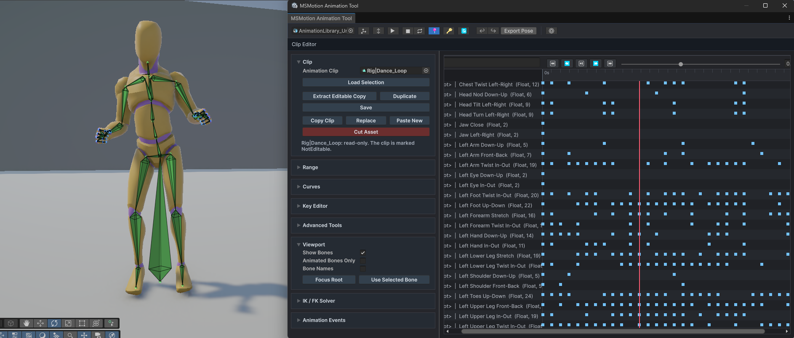
Figure 1: Overview of the Animation Editor Workspace
1. Top Toolbar
The top toolbar contains global controls for preview setup, play/pause clock manipulation, and undo/redo functions:
- Preview Root: A field to assign a character GameObject from the Scene. This character is used to preview the animation changes in real time.
- Play / Stop / Loop: Playback controls to run or halt the animation in edit mode.
- Reset Root: A toggle that forces the character to snap back to its original coordinate origin when the animation loop starts over.
- Auto-Key: Toggles automatic recording of keyframes when character bones are transformed in the Scene view.
- Offset Mode: When active alongside Auto-Key, transforming a bone shifts the entire animation curve by that amount as a constant offset, rather than overwriting only the current frame.
- Undo / Redo: Quick buttons to step backward or forward through your edits.
- Live Link (Sync-to-Composition): Evaluates the full Composition context (IK, Masks, FX) live in the Scene view instead of just the raw animation clip.
- Ghost Preview: Shows a semi-transparent "ghost" of the full composition context blended in the background while you edit the raw clip.
- Export Pose: Bakes the current pose of the preview character into a new, single-frame Animation Clip asset.
- Settings (⚙): Opens the settings window to customize colors, row heights, and layout scales.
2. Left Sidebar Panels
An accordion-style container of collapsible sections containing settings and action buttons:
- Clip: Load assets, extract editable copies of read-only clips, and manage the clipboard.
- Range: Perform crop, delete, shift, stretch, snap, and bake operations across selected time regions.
- Curves: Search, filter, select, and delete animated property bindings.
- Key Editor: Detailed numerical control over a single selected keyframe's time, frame, value, and mathematical tangents.
- Advanced Tools: Panels for Mirror Pose, Tween Machine, Keyframe Optimizer, Keyframe Smoothing, and Extract Root Motion.
- Viewport: Toggle bone overlay shapes, colors, and name tags.
- IK / FK Solver: Controls for locking IK targets and blending procedural IK chains with base skeletal poses.
- Animation Events: Visual list of runtime event markers triggered by the clip.
3. Timeline Scrubber & Tracks
The main workspace where keyframes are visualized and manipulated:
- Timeline Ruler: Shows time in seconds or frames, and hosts event markers.
- Scrubber: The red vertical line indicating the current preview time. Drag the scrubber handle to scrub time.
- Tracks: Horizontal rows displaying keyframes for selected curves. Keys are colored by curve type (blue for floats, orange for object references).
Keyboard Shortcuts
The Animation Editor supports the following hotkeys to speed up your editing workflow. Make sure the editor window is in focus when using these shortcuts:
Playback & Navigation
| Hotkey | Action |
|---|---|
| Space | Play or pause animation playback. |
| Left Arrow | Step the playhead backward by 1 frame. |
| Right Arrow | Step the playhead forward by 1 frame. |
| Shift + Left Arrow | Step the playhead backward by 10 frames. |
| Shift + Right Arrow | Step the playhead forward by 10 frames. |
| Home | Jump the playhead to the beginning of the animation (0.0s). |
| L | Toggle playback loop option (Loop). |
Editing Actions
| Hotkey | Action |
|---|---|
| Delete / Backspace | Deletes elements based on selection context: • If keyframes are selected on the timeline, deletes those keys. • If a single key is active in the Key Editor list, deletes that key. • If property curves are highlighted in the Curves panel, deletes those curves. |
| Ctrl + Z | Undo the last action. |
| Ctrl + Y / Ctrl + Shift + Z | Redo the last undone action. |
| Ctrl + C | Copy selected keyframes to the clipboard (or copy the active time range selection if no keys are highlighted). |
| Ctrl + X | Cut selected keyframes to the clipboard (or cut the active time range selection if no keys are highlighted). |
| Ctrl + V | Paste clipboard keyframes at the playhead time (or paste the copied time range). |
Viewport & Tools
| Hotkey | Action |
|---|---|
| K | Toggle Auto-Key recording mode. |
| B | Toggle Show Bones overlay in the Scene view. |
Getting Started
Follow this guide to install the MSMotion Animation Editor and perform your first animation editing pass.
System Requirements
- Unity Version: Unity 2022.3 LTS or newer.
- UI Toolkit: Compatible with projects using Unity's modern UI Toolkit styling.
- Dependencies: Requires a character GameObject with an Animator component in the scene to enable active Scene view previews and IK solvers.
Installation
The Animation Editor is distributed as a Unity Package Manager (UPM) package. Add it to your project using one of the following methods:
Method A: Install via Git URL (Recommended)
- In Unity, open Window > Package Manager.
- Click the + button in the top-left corner of the Package Manager window.
- Select Add package from git URL... from the dropdown menu.
- Enter the package URL provided with your repository access or purchase:
https://github.com/maharajastudio/com.maharajastudio.animation-editor.git - Click Add. Unity will download and import the package.
Method B: Install via Local Tarball
- Download the package tarball file (
.tgz) to your computer. - Open Window > Package Manager.
- Click the + button in the top-left corner and select Add package from tarball...
- Browse to and select the downloaded
.tgzfile. - Click Open to import.
Quick Start Tutorial: Your First Edit
Follow these steps to load a character model and modify an existing walk animation clip:
1. Open the Animation Editor
Open the editor window from the main Unity menu:
Go to Tools > Maharaja Studio > MsMotion > Animation Editor.
2. Set Up the Preview Character
- Open or set up a Unity scene containing your character model.
- Ensure the character GameObject has an Animator component.
- In the Animation Editor's top toolbar, click the object picker next to Preview Root (or drag the character GameObject from the Hierarchy directly into the Preview Root field).
3. Load an Animation Clip
- In the Project window, find a walk or idle Animation Clip asset (
.anim). - Drag and drop the Animation Clip asset directly into the Animation Clip field in the sidebar's Clip panel.
- Alternatively, select the character in the Hierarchy, make sure it has an Animator playing a clip, and click Load Selection in the editor sidebar to automatically populate the root and clip fields.
4. Play and Scrub
- Click ► Play in the toolbar to preview the animation running in edit mode.
- Drag the red Scrubber line horizontally across the timeline to inspect the pose frame-by-frame.
- Adjust the Loop and Reset Root toggles to control how the character loops.
5. Modify a Bone Pose (Auto-Key)
- Turn on the Auto-Key toggle in the toolbar.
- Move the timeline scrubber to the frame you want to edit (e.g. Frame 15).
- In the Scene view, select one of the character's arm bones (e.g., shoulder or elbow).
- Use Unity's standard rotation handle to rotate the arm.
- Release the mouse. The timeline will register a red marker on that frame for the modified bone, saving your pose change directly into the animation clip.
- Press Ctrl + Z to undo the change if needed.
Timeline & Range Operations
The timeline is where you navigate your animation, select time regions, and execute structural edits across ranges of keyframes.
Timeline Navigation
Navigating the timeline is simple and fluid:
- Scrubbing: Click and drag the red playhead line left or right across the ruler to scrub through time.
- Playback Shortcuts: Use the navigation buttons in the timeline toolbar:
- First Frame (⏮): Snaps the playhead to the beginning (0.0s).
- Previous Frame (⏪): Steps backward by one frame.
- Play / Pause (⏯): Starts or pauses playhead movement.
- Next Frame (⏩): Steps forward by one frame.
- Last Frame (⏭): Snaps the playhead to the end of the clip.
- Zooming: Hover your mouse over the track area and hold Ctrl (or Alt) while scrolling the wheel. Zooming allows you to expand the timeline horizontally to see individual frame markings or contract it to see the entire clip.
Time and Frame Formats
You can view and enter time in two formats:
- Seconds: Entered numerically (e.g.,
0.75seconds). - Frames: Entered as integers (e.g., Frame
45). The editor converts time using the clip's frame rate. For example, at a frame rate of60 FPS, Frame 30 corresponds to0.5seconds. - FPS Setting: Located in the sidebar's Range section. Change this value to adjust the grid density for snapping and baking actions.
Creating Selection Ranges
To select a specific segment of the animation:
- Hover your cursor over the ruler track area.
- Click and drag horizontally. A blue highlighted box will cover the selected time region.
- To adjust the boundaries, hover over the left or right edges of the blue selection box until the cursor changes, then drag the handle.
- The numerical boundaries will update in the Start and End fields in the sidebar. You can also type frame numbers directly in the Start Frame and End Frame fields to set an exact range.
Range Editing Actions
Once you have set a selection range, you can perform structural actions from the sidebar:
Copy, Cut, Paste, and Delete
- Copy Range: Copies only the keyframes within the selected range into the clipboard.
- Cut Range: Copies the keyframes in the selection and deletes them from the clip.
- Paste Range: Pastes the clipboard keyframes at the current playhead time.
- Delete Range: Clears all keyframes within the selection range.
- Ripple delete/cut: A toggle in the Range sidebar. When enabled, deleting or cutting a range automatically shifts all keyframes to the right of the selection leftward, closing the gap. When disabled, the space is left empty (holding the last pose).
Paste Modes
Select a mode from the Paste Mode dropdown before pasting:
- Overwrite: Clears any existing keyframes in the target time region and drops in the clipboard keys.
- Merge: Keeps existing keys and overlays the clipboard keys on top of them.
- Insert: Moves all subsequent keyframes to the right by the duration of the clipboard data to make room, then inserts the copied range.
Advanced Range Transformations
- Crop Clip: Destructive action that discards all animation before the selection start and after the selection end, keeping only the selected range.
- Trim Head: Instantly deletes all keyframes before the selection start.
- Trim Tail: Instantly deletes all keyframes after the selection end.
- Extract Range: Saves the selected segment as a brand-new standalone
.animfile. - Reverse: Flips the keyframe sequence in the selection backwards in time (great for reversing loops or walkcycles).
- Scale: Multiplies the timing of keys in the range by the value in the Scale field. For example, a scale of
2.0doubles the duration (slowing it down), while0.5cuts the duration in half (speeding it up). Subsequent keys are shifted (rippled) to match. - Snap: Aligns all keyframes in the range to the nearest frame grid interval defined by your FPS setting, removing sub-frame jitter.
- Bake: Samples the curves and generates a keyframe on every single frame grid line within the selection. Useful for freezing procedural overlays or preparing data for export.
Curve & Keyframe Editing
The Animation Editor provides detailed control over curves and individual keyframe coordinates. This guide explains how to isolate animated properties, modify key values, adjust tangents, and edit object reference tracks.
The Curves Panel
The Curves panel lists all animated properties contained within the clip. It allows you to isolate and operate on specific parts of your model:
- Filter Search: Type search terms (e.g.,
shoulderorrotation) into the search bar at the top of the panel to filter the list of curves. - Operate on Selected Curves Only: When this toggle is enabled, range operations (such as Delete Range, Scale Range, or Snap Keys) affect only the curves you have highlighted in the list. Unselected curves remain untouched.
- Select All / Clear Selection: Quick buttons to highlight all visible curves or clear selection.
- Delete Selected: Removes the selected property curves entirely from the animation clip.
- Clear Scene Bones: Rather than manually searching for curves, you can highlight bones directly in the Scene view and click Clear Scene Bones:
- Clear Selected Bones Only: Deletes animated curves for the selected bones.
- Clear Selected Bones & Children: Deletes animated curves for the selected bones and their entire hierarchy (e.g., clearing an entire arm from the shoulder down). This tool automatically maps humanoid muscle properties and generic transform paths.
Single-Key Editor
When you select exactly one curve in the Curves list, the Key Editor panel activates, listing every keyframe on that curve.
Selecting Keyframes
- Scroller List: Select a keyframe from the scrollable list. Each entry displays its index, frame number, time in seconds, and value.
- Timeline Clicks: Click a keyframe marker directly in the timeline tracks.
- Select Nearest: Click the Nearest button to automatically highlight the keyframe closest to the playhead time.
Editing Keyframe Coordinates
To edit a keyframe:
- Select a keyframe. Its coordinates will populate the editable fields.
- Modify any of the following parameters:
- Time: Change the keyframe's position in seconds.
- Frame: Change the keyframe's frame position.
- Value: Set the numerical value (for float curves like translation, rotation, or scale).
- Tangents (Incoming / Outgoing): Adjust the numerical slope of the curve entering and leaving the keyframe to control acceleration.
- Click Apply Key to save the changes.
Key Editing Toolbar Actions
- Add Key: Creates a new keyframe on the active curve at the time and value entered in the fields.
- Delete Key: Removes the selected keyframe.
- Nudge Buttons (-1 Frame / +1 Frame): Shifts the selected keyframe backward or forward in time by exactly one frame.
- Key Current: Samples the preview character's current pose and writes a keyframe onto all selected curves at the playhead time.
- Delete Current: Deletes any keyframes that sit on the current frame for all selected curves.
Working with Object Reference Curves
Some animation tracks drive object changes (such as swapping sprites, activating audio clips, or replacing materials) rather than numeric values:
- Visual Indicators: Object reference keyframes appear on the timeline tracks as orange diamond markers (instead of standard blue float markers).
- Object Picker: The Value field in the Key Editor converts into an Object Value field. Clicking this opens a selection popup displaying all assets in your project of that object type. Choose an asset to bind it to that keyframe.
- No Tangents: Because object changes are instantaneous swaps rather than gradients, tangent controls and the curve graph are automatically disabled when editing an object reference curve.
Animation Events
Animation Events allow you to trigger runtime visual effects, audio clips, camera shakes, or custom scripts at precise moments during an animation clip's playback (e.g., spawning dust particles on a footstep or playing a weapon swing sound).
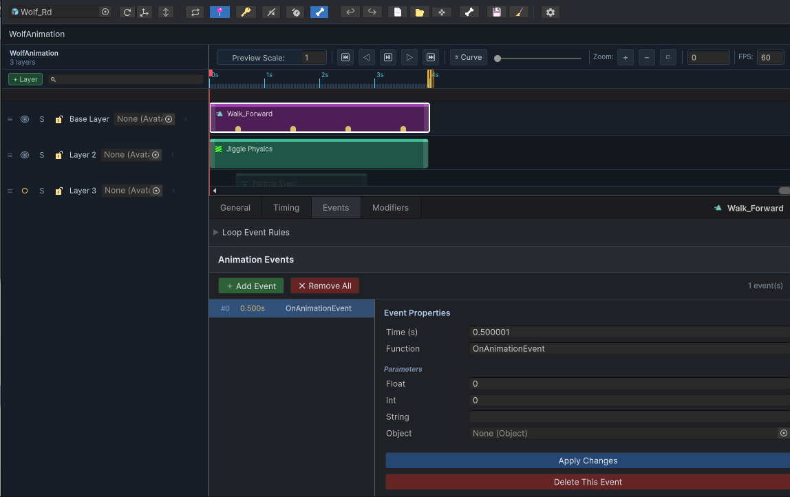
Figure 7: Animation Events Timeline and Editor Panel
Visualizing Events on the Timeline
Events are represented visually on the timeline ruler:
- Event Markers: Small gold-colored diamond markers appearing along the bottom edge of the Timeline Ruler.
- Selection: Click a gold marker to highlight the event. The playhead snaps to the event's trigger time, and the Animation Events panel in the sidebar updates to display the event's settings.
- Dragging: Click and drag an event marker horizontally along the ruler to adjust its trigger time.
The Event Editor Panel
When you select an event, you can configure its parameters in the Animation Events panel at the bottom of the sidebar:
1. Identity & Timing
- Display Name: The human-readable label shown in the editor (e.g.
FootstepLeftorSlash). - Trigger Time: The precise time in seconds when the event fires.
- Duration: Set to
0.0for one-shot events (like playing a sound once). Set to a value greater than0.0for sustained events (like keeping a particle emitter active or looping a sound over a range). - Loop / Blend: Set fade-in and fade-out times to smoothly blend effects (such as audio volume or light brightness).
2. Socket Targets
- Target Bone: Enter the name of a character joint to attach the spawned effect to (e.g.
Foot_LorHand_R). Leave this empty to spawn the effect at the character's root position.
3. Transform Overrides
Specify local offset coordinates relative to the target bone:
- Position Offset: Shifts the effect's starting coordinates (e.g. offsetting a dust particle slightly below the foot joint).
- Rotation Override: Rotates the effect relative to the bone's orientation.
- Scale Override: Scales the size of the spawned effect.
4. Property Overrides
The editor allows you to dynamically set component parameters on the spawned effect at runtime (such as changing a Light component's intensity or calling custom script variables):
- Click the Property Override fields to target specific components and write value changes.
- Allow Editor Preview Overrides: Toggles whether these property overrides run inside the Unity Editor preview. Enable this with caution, as previewing scripts can modify scene assets.
Event Workflows
How to Create an Event
- Move the timeline playhead to the frame where the event should occur.
- Right-click on the timeline ruler.
- Select Add Event (or click the Add Event button in the sidebar panel).
- A new gold marker will appear, and you can customize its function and parameters in the sidebar.
How to Adjust Event Timing
- Click and drag the gold event marker on the ruler.
- Alternatively, enter the exact value in the Trigger Time field in the sidebar.
How to Delete an Event
- Click the gold marker to select it.
- Click the Delete button in the sidebar panel.
Bone Overlay & IK/FK Solver
Posing characters by navigating hierarchical bone structures can be tedious. The Animation Editor features a visual Bone Overlay and an interactive IK/FK Solver to pose models directly in the Scene view.
The Viewport Bone Overlay
The Viewport panel in the sidebar overlays a visual skeleton on top of your character in the Scene view, making it easy to see joint relationships and identify animated parts:
Overlay Toggles
- Show Bones: Draws the character's skeleton in the Scene view.
- Animated Bones Only: Hides non-animated bones, drawing only the bone paths that have active keyframes in the loaded clip.
- Bone Names: Draws text labels next to the joints in the viewport.
Visual Configurations (⚙ Settings Window)
You can customize the appearance of the bone wireframe:
- Bone Shape: Choose between wire Lines, Diamonds, or Boxes.
- Bone Size & Width: Scale sliders to match different character sizes (e.g. tiny creatures vs. giants).
- Color Schemes: Distinct colors for standard bones, animated bones, and currently selected bones.
Viewport Action Buttons
- Focus Root: Frames the Scene view camera directly onto the character.
- Use Selected Bone: Select a bone transform in the Scene view, then click this button. The editor will automatically locate that bone's animation curves in the Curves panel and filter the timeline to show only that bone's tracks.
IK / FK Solver Integration
The editor includes a real-time edit-mode Inverse Kinematics (IK) rig solver that runs inside the Scene view, allowing you to drag end-effectors (like hands or feet) and have the limb joints bend naturally:
Visualizing IK Handles
When an IK rig is assigned in the IK / FK Solver sidebar panel, colored handle markers appear in the Scene view at the active IK targets:
- Posing limbs: Click and drag an IK target handle (e.g., a hand control circle) in the Scene view. The elbow and shoulder joints bend in real time to follow your hand.
- Stable Pole Vectors: Limbs bend consistently based on pole vector configurations.
- Procedural Scales: The solver supports stretch-and-scale calculations, automatically adjusting bone lengths if the target is pulled beyond the limb's reach.
IK Auto-Keying Workflow
To prevent drag latency and handle loss, the editor handles pose calculations in two distinct steps:
- Interactive Dragging: While dragging a handle, the character's limbs adjust visually in real time. The editor does not write keyframes mid-drag.
- Keyframe Baking: When you release the mouse button, the solver calculates the final rotation and position values for all bones in the limb chain. If Auto-Key is enabled, it bakes these solved values as keys into the animation clip at the current playhead frame.
Transition & Bridging
When editing motion capture or cleaning up sequences, you often need to remove a bad segment (such as a glitch, pop, or idle gap) and blend the remaining ends together. The Remove + Bridge tool handles this process automatically.
How Bridging Works
Bridging performs two operations in sequence:
- It deletes all keyframes within your selected time range.
- It calculates the pose of the character immediately before the deleted range and the pose immediately after it.
- It generates new transition keyframes across the gap to blend smoothly between those two boundary poses over a designated duration.
Original: [--- Pose A ---] [======= Glitchy Segment =======] [--- Pose B ---]
Cut: [--- Pose A ---] [--- Pose B ---]
Bridged: [--- Pose A ---] \____ Transition Blend (Bridge) _/ [--- Pose B ---]Bridging Controls
Configure these controls in the sidebar's Range section before running the operation:
Transition Duration
Set the blend length in seconds in the Transition field.
- A short duration (e.g.,
0.1s) creates a fast, sudden snap. - A long duration (e.g.,
0.5s) creates a slow, soft blend. - The duration cannot exceed the total length of the removed segment.
Transition Mode
Choose how the editor interpolates values between the boundary poses:
| Mode | Interpolation Style | Best Used For |
|---|---|---|
| Linear | Steady, constant speed from start to end. | Quick shifts, mechanical parts, or linear camera movements. |
| Smooth | Eases out of Pose A and eases into Pose B (using a smooth curve). | Human and creature body motions, walk cycle stitching, and natural posture shifts. |
Step-by-Step Workflows
Method 1: Bridge and Edit the Loaded Clip Directly
Use this method to modify your active animation in place:
- Scrub to locate the segment you want to remove.
- Drag on the ruler to highlight the range, or type the boundary times in the Start and End fields.
- In the sidebar, set your desired blend length in the Transition field.
- Choose Smooth or Linear from the Transition Mode dropdown.
- Click Remove + Bridge.
- The editor deletes the segment, ripples subsequent keys leftward, and inserts smooth blending keyframes across the transition window.
Method 2: Export a Bridged Copy
Use this method to generate a new file, leaving your source animation untouched:
- Define the range, set the Transition duration, and choose the Transition Mode as described above.
- Click Export Bridged in the sidebar.
- A standard Unity save file dialog will open. Name the new asset (e.g.
walk_cycle_bridged.anim) and choose a location. - The editor generates and saves the new, bridged clip without altering the loaded asset.
Advanced Editorial Tools
The Animation Editor includes five advanced tools located in the Advanced Tools sidebar foldout. These tools streamline editing tasks like mirroring poses, blending keys, cleaning up noise, and extracting root motion.
1. Mirror Pose
The Mirror Pose tool flips the animation data across the character's center axis. This is useful for copying poses from the left arm to the right, or mirroring entire walk cycles.
Settings
- Target Options:
- Current Frame Only: Mirrors only the pose at the current playhead time.
- Selected Time Range: Mirrors animation keys falling within your active selection range.
- Selected Keys: Mirrors only the specific keyframes highlighted in the timeline.
- Entire Clip: Mirrors the animation across the full length of the clip.
- Limit to Selected Curves: When enabled, the mirror action only affects the curves highlighted in the Curves list (e.g. mirroring only the arm curves while leaving the legs untouched).
How it Works
- Humanoid Characters: The editor uses Unity's humanoid joint mapping to swap muscle values (e.g., Left Shoulder Twist to Right Shoulder Twist) and automatically inverts values to maintain visual symmetry.
- Generic Characters: The editor uses naming rules to swap curve paths (e.g., swapping paths containing
Left,L, or_L_withRight,R, or_R_). Numeric translation and rotation coordinates are inverted on the appropriate axes.
2. Tween Machine
The Tween Machine allows you to interactively blend the pose at the current frame using the preceding and succeeding keyframes as anchors.
How to Use
- Select one or more property curves in the Curves list.
- Move the playhead to a frame between two keyframes.
- Drag the Blend slider left or right:
- Dragging Left (0.0) blends the pose toward the previous keyframe's value.
- Dragging Right (1.0) blends the pose toward the next keyframe's value.
- Leaving it in the Center (0.5) creates an equal blend.
- Release the slider to bake the interpolated value as a keyframe at the playhead time.
3. Keyframe Optimizer
Raw animations (especially motion capture or baked animations) often contain keys on every single frame, resulting in large asset file sizes. The Keyframe Optimizer removes redundant keys without changing the overall shape of the motion.
Settings
- Position Tol.: The threshold (in units) for discarding translation keyframes.
- Rotation Tol.: The threshold (in degrees) for discarding rotation keyframes.
- Algorithm: The editor analyzes each curve. If a keyframe's value deviates less than the tolerance from a straight line drawn between the preceding and succeeding keys, it is deleted.
4. Keyframe Smoothing
The Keyframe Smoothing tool filters jitter, noise, and abrupt spikes from animation curves.
Settings
- Target Bone: Choose a specific bone curve path to smooth, or select All Bones to filter the entire clip.
- Filter Type:
- Median: Removes isolated spikes and sudden noise pops while preserving sharp motion transitions.
- Average: Smooths general noise by calculating a flat average of neighboring frames.
- Gaussian: Applies a weighted average to create smooth, organic motion profiles.
- Window Size: The frame range (3 to 51 frames) used for the smoothing calculations. Larger windows create smoother, slower motion.
- Iterations: The number of filtering passes (1 to 5) to run.
- Auto Tangents: Automatically adjusts tangent slopes for the modified keyframes to maintain smooth curves.
- Limit Range: Confines the smoothing filter to the time window specified in the Range (s) fields.
5. Extract Root Motion
Root motion moves the character's physical coordinate origin in the game world based on the animations. The Extract Root Motion tool isolates movement from a character bone and transfers it to the animation's Root Node.
Typical Workflow
- Select the bone that contains the forward motion (typically the
Hips,Pelvis, or the root-most moving bone). - Configure extraction settings:
- Target is Humanoid: Enable this if working on a humanoid character.
- Pos (X/Y/Z) / Rot (X/Y/Z): Choose which motion axes to extract. For standard locomotion, position X and Z (horizontal movement) and rotation Y (turning direction) are typically extracted, leaving position Y (jumping height) on the hips.
- Click Extract Root Motion. The editor strips translation and rotation from the hips bone and writes it directly onto the clip's root transform curves.
Clip & Asset Management
The Animation Editor operates directly on animation assets. This guide explains how to manage animation clips, convert read-only animations, and utilize the clip clipboard.
Loading Animations
You can load animations into the editor using three methods:
- Drag and Drop: Drag any Animation Clip asset from your Project window and drop it anywhere inside the Animation Editor window.
- Object Picker: Click the small circle icon next to the Animation Clip field in the sidebar and choose a clip from the list.
- Load Selection: Highlight a character in the scene hierarchy or click an Animation Clip asset in the Project view, then click the Load Selection button in the sidebar. The editor will automatically hook up the character and the clip.
Understanding Editable vs. Read-Only Clips
Unity separates animations into two categories, and the editor displays safety warnings based on the loaded asset type:
| Asset Type | Origin | Editable? | Editor Behavior |
|---|---|---|---|
Standalone Clip (.anim) |
Created inside Unity or exported. | Yes | Fully editable. Keyframe changes write directly to the asset. |
| Embedded Clip | Embedded inside a Layout Composition. | Yes | Fully editable. Edits save inside the parent composition container. |
| Imported Model Clip | Embedded inside a 3D model file (e.g. .fbx, .obj). |
No | Read-Only. The editor blocks key editing and displays a yellow warning bar. |
Extracting Read-Only Animations
To edit an imported model animation, you must create a writeable copy. The editor provides an Extract Editable Copy button in the sidebar's Clip panel to automate this:
- Standalone Mode: If you are editing a clip outside a layout composition, clicking Extract Editable Copy opens a standard Unity save file dialog. Choose a folder in your project to save the writeable
.animfile. - Composition Mode: If the clip is loaded inside a Layout Composition, clicking Extract Editable Copy automatically extracts the clip and embeds it directly inside the composition asset as a sub-asset, avoiding folder clutter.
Asset Panel Controls
The Clip panel in the sidebar contains actions to manage files and copy data:
File Commands
- Duplicate: Creates a direct clone of the currently loaded Animation Clip asset. It prompts for a new filename and loads the clone.
- Save: Forces Unity to write all cached in-memory keyframe changes back to the physical
.animfile on your disk.
Clipboard Commands
The editor features a dedicated animation clipboard separate from the operating system clipboard. This allows you to transfer animations between clips:
- Copy Clip: Copies the entire loaded animation (all curves, keys, and events) into the clipboard buffer.
- Replace: Replaces the loaded animation's contents with the animation currently held in the clipboard. This is a destructive operation and supports Undo.
- Paste New: Extracts the animation from the clipboard buffer and saves it as a brand-new standalone
.animasset. - Cut Asset: Copies the loaded animation to the clipboard, then prompts you to delete the source asset from the project files entirely.
Safety Safeguards
To prevent accidental data loss, the editor includes several built-in safety features:
- Status Readout Warning: A status label at the bottom of the Clip panel turns red and displays a detailed description whenever you attempt to write keyframes to a read-only FBX file.
- Destructive Confirmations: Prompts are shown before deleting assets or overwriting files (e.g., when clicking Cut Asset or Replace).
- Empty Selections: Operations that require selections (like copying keyframes) display status prompts if nothing is highlighted, preventing silent failures.
Composition Editor
The Composition Editor is the most advanced feature in MSMotion. It provides a multi-layer, timeline-based animation mixer and solver environment for combining standard animations, procedural constraints (such as Look-At and Foot IK), secondary physics (Jiggle), and runtime FX events into a single, cohesive playback sequence.
Unlike the Animation Editor which works on a single, isolated animation clip, a Composition acts like a Photoshop document (PSD) for character motion. You stack clips, override poses, and inject physics solvers across separate layers, blending them together to author complex character behaviors.
Compositions are saved as self-contained .asset files in your project. You can create a new Composition by right-clicking in the Project window and choosing Create > MaharajaStudio > MSMotion Composition.
Editor Window Layout
To open the Composition Editor, choose Tools > Maharaja Studio > MsMotion > Composition Editor from the Unity menu bar. The window is divided into several main sections:
+-----------------------------------------------------------------------------+
| Top Toolbar |
+-----------------------------------------------------------------------------+
| | |
| Left Sidebar | Timeline View |
| Layers Panel | (Tracks, Scrubber, Loop Region) |
| | |
+---------------------+-------------------------------------------------------+
| |
| Inspector / Details Panel |
| |
+-----------------------------------------------------------------------------+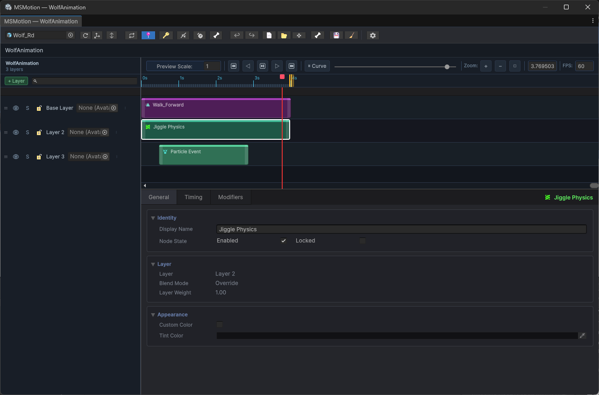
Figure 2: Overview of the Composition Editor Workspace
1. Top Toolbar
Provides global controls for active preview, playback, asset actions, and utility windows:
- Preview Root: An object picker field to assign a character GameObject from the active Scene. Once assigned, this character is bound to the playable graph to preview the blended animation layers, IK solvers, physics simulation, and FX triggers in real time.
- Refresh Bones (Refresh Icon): Re-binds bone hierarchies and updates the context for all active FX slots and scene overlays, forcing a Scene View redraw to align bone alignments.
- Set Origin (Avatar Pivot Icon): Locks the character preview's current position, rotation, and scale as the composition's permanent starting origin. When playback loops or resets, the character snaps back to these exact coordinates, preventing position drift or starting displacement.
- Height Clamp (↕ Icon): Opens the Height Clamp configuration panel.
- Enable Height Clamp: Toggles vertical constraint enforcement on the preview character's root.
- Min Height / Max Height: Float fields to define a vertical movement corridor.
- Viewport Interaction: Displays a green horizontal plane for the minimum height boundary and a red plane for the maximum height boundary in the Scene View. You can drag these planes using standard position handles to adjust the vertical bounds.
- Play/Pause (► / ❚❚): Plays or pauses composition playback in edit mode.
- Loop Playback (Loop Icon): Cycles playback automatically back to the beginning when reaching the end of the loop region.
- Reset Root (📍 Pin Icon): When active, resets the character to the captured starting origin coordinates whenever the playback loops back to the start.
- Auto-Key (🔑 Key Icon): When toggled on, rotating or moving bones inside the Scene View automatically inserts keyframe values into the active clip or pose node at the playhead's current frame.
- Mute Events (Speaker Icon): Globally silences all animation events and FX slot triggers during playback and scrubber sweeps.
- Allow Editor FX (Safety Icon): Permits Script Events and Property Overrides to execute in the Editor Preview.
Warning: Enabling this option allows script event triggers to modify active scene components. Use with care to avoid permanent modifications to non-playback scene assets.
- Bone Rendering (🦴 Bone Icon): Shows or hides a solid overlay skeleton of the character in the Scene View for easy joint selection and visual troubleshooting.
- Undo / Redo (↩ / ↪): Undoes the last edit action or redoes the last undone action.
- New Composition (📄 Page Icon): Creates a new, blank Composition asset (.asset) in the project folders.
- Open Composition (📂 Folder Icon): Displays a file finder to select and open an existing Composition asset.
- Rig Config (🦴 Bone Icon): Opens the IK Rig Config Editor Window to set up custom inverse kinematics chains, solvers, presets, and joint constraints.
- Export (💾 Disk Icon): Opens the Export Options Window to bake the multi-layer timeline composition into a single, clean Animation Clip or FBX asset.
- Cleanup Sub-Assets (🧹 Broom Icon): Scans the composition asset for orphaned or unused sub-clip assets and permanently deletes them to optimize project asset sizes.
Caution: Running this cleanup clears the editor's undo history for the session.
- Settings (Gear Icon): Opens the MSMotion Settings Window to adjust general editor options, timeline rows, visuals, snapping defaults, and undo boundaries.
2. Breadcrumb Bar
Located directly below the global Top Toolbar. It displays the folder path and asset hierarchy of the currently loaded Composition asset. Clicking any path element pings that specific folder or asset in the Project window.
3. Left Sidebar (Layers Panel)
Manages the stacking and blending behavior of your animation layers. Evaluated from bottom to top.
4. Timeline View
Displays horizontal tracks corresponding to each layer. Timeline blocks (Nodes) can be dragged, resized, split, and duplicated here. Includes the Timeline Ruler, Scrubber, and Loop Region.
5. Inspector / Details Panel
Surfaces the options and properties of the currently selected layer or timeline block.
The PSD Layer Model
Compositions evaluate layers from bottom to top (higher layers in the list draw on top of lower ones, blending according to their weights and masks).
+----------------------------------------+
| [Layer 3] Override (Upper Body Mask) | -> Overwrites Layer 2 & 1 (Chest up)
+----------------------------------------+
| [Layer 2] Additive (Jiggle Physics) | -> Adds jiggle on top of Layer 1
+----------------------------------------+
| [Layer 1] Base (Full Body Walk Clip) | -> Drives primary motion
+----------------------------------------+Each layer in the sidebar contains the following user-facing controls:
| Control | Function |
|---|---|
| Enable (Mute) | A toggle (checkbox/eye icon) to include or exclude the layer from playback and baking previews. |
| Solo | Mutes all other layers in the composition so you can audit this layer in isolation. |
| Lock | Prevents editing, moving, or resizing of any timeline blocks on this layer. |
| Blending Mode | Defines how the layer mixes with layers below it: • Override: Fully replaces motion from lower layers. • Additive: Adds the relative pose difference on top of lower layers. |
| Weight | A slider from 0.0 (no influence) to 1.0 (full strength) representing how much of this layer is blended in. |
| Use Curve | Enables automating the layer weight using an Animation Curve instead of a static slider. |
| Layer Mask | Accepts a Unity AvatarMask asset. Only bone hierarchies checked in this mask are animated by this layer. |
Keyboard Shortcuts
Use these hotkeys to navigate the timeline and perform edits inside the Composition Editor. Ensure the window is focused:
Playback & Navigation
| Hotkey | Action |
|---|---|
| Space | Play or pause composition playback. |
| Right Arrow | Step playhead forward by 1 frame. |
| Left Arrow | Step playhead backward by 1 frame. |
| Shift + Right Arrow | Step playhead forward by 10 frames. |
| Shift + Left Arrow | Step playhead backward by 10 frames. |
| Home | Jump playhead back to the beginning (0.0s). |
| L | Toggle playback loop option. |
| M | Toggle Mute Events globally. |
Editing Actions
| Hotkey | Action |
|---|---|
| Delete / Backspace | Deletes all currently selected timeline blocks. |
| Ctrl + Z | Undo the last action. |
| Ctrl + Y / Ctrl + Shift + Z | Redo the last undone action. |
| Ctrl + C | Copy the first selected block to the clipboard. |
| Ctrl + X | Cut the first selected block to the clipboard. |
| Ctrl + V | Paste clipboard block onto the active layer at the playhead time. |
| Ctrl + D | Duplicate all selected timeline blocks. |
| S | Split selected timeline blocks at the current playhead time. |
Editor Settings
The MSMotion Settings window acts as a central hub for configuring your workspace preferences, timeline rendering options, snapping mechanics, viewport overlays, and undo buffers.
To open the Settings window, click the Settings (Gear Icon) on the composition top toolbar or choose Tools > Maharaja Studio > MsMotion > Setting from the Unity menu bar.
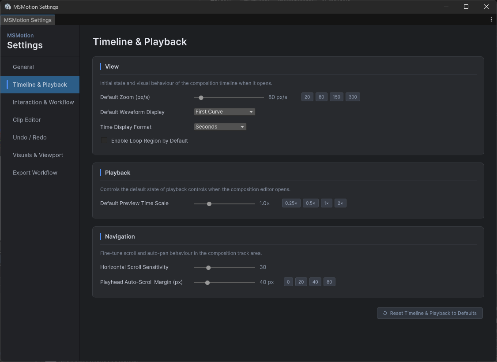
Figure 8: MSMotion Settings Panel
1. General Category
- Default Frame Rate: The frame rate applied to newly created compositions (presets:
24,30,60,120FPS). - Default Layer Blend Mode: The default mixing mode assigned when adding a new layer (Override or Additive).
- Ripple Delete: When enabled, deleting a timeline block automatically shifts all subsequent blocks on that same layer to the left, closing the gap.
2. Timeline & Playback Category
- Default Zoom (px/s): Pixels-per-second zoom scale applied when opening a composition (range:
20to800px/s). - Default Waveform Display: The visual waveform drawn on clip nodes (First Curve or Energy Bars).
- Time Display Format: The format of the timeline ruler and time fields (Seconds, Frames, or SMPTE).
- Enable Loop Region by Default: Automatically activates a loop region across the entire duration when a composition is first opened.
- Default Preview Time Scale: The starting playback speed (range:
0.1×to4.0×). Only affects editor previews. - Horizontal Scroll Sensitivity: Mouse wheel multiplier when scrolling horizontally through tracks.
- Playhead Auto-Scroll Margin (px): How close the playhead can get to the track boundary before the view automatically pans.
3. Interaction & Workflow Category
- Slot Snap Mode: Snapping behavior when dragging clips (None, Frame, SlotBoundaries, Markers, or All).
- Snap Tolerance (px): Distance threshold in pixels where snapping occurs (range:
1to50px). - Trim Handle Width (px): Size of the interactive edge drag handles on timeline blocks (range:
4to20px). - Auto-Select New Slots: Automatically selects a timeline node in the inspector as soon as it is created.
- Default New Slot Duration (s): Duration in seconds for newly created blank or override slots (range:
0.1sto10.0s).
4. Undo / Redo Category
- Max History Count: The maximum number of undo steps stored in memory per composition.
- Grouping Window (s): Microsecond threshold where continuous adjustments are merged into a single undo command instead of creating individual entries.
- Clear All Undo History: Erases the active session undo/redo stack for all open compositions.
5. Visuals & Viewport Category
- Show Bone Overlay by Default: Automatically activates skeleton drawing when opening a composition.
- Animated Bones Only: Restricts skeletal outlines to bones that contain active animation curves.
- X-Ray (Draw Over Mesh): Renders the skeletal bone overlays on top of the character's geometry.
- Show Local Axes: Renders three-axis coordinate gizmos on each bone.
- Show Bone Names: Draws text label tags next to each joint.
- Joint Size / Bone Shape / Bone Width: Configures bone geometry representation.
- Onion Skinning: Renders semi-transparent ghost poses of past and future frames to help visualize the motion curve.
Animation Clip Node
An Animation Clip Node is the fundamental building block of a composition layer. It represents a specific segment of time on the timeline during which a native Unity Animation Clip (.anim) plays back on the preview character.
Visual Timeline Blocks
Animation Clip Nodes are shown as colored horizontal blocks on the timeline tracks. You can customize the **Waveform Mode** to display curves:
- First Curve: Draws the first animated float curve of the clip.
- Energy Bars: Computes the root-mean-square (RMS) velocity energy of the curves.
Positioning and Resizing
- Move: Click and drag the middle of a block to shift its start time.
- Resize: Click and drag the left or right edges of the block to change its duration.
- Resize Modes:
- Trim: Playback speed remains constant. Stretching the block reveals more of the source clip; shrinking it cuts the end.
- Scale: The entire source animation is stretched or compressed to fit the visual block bounds.
Inspector Parameters
- Clip: The Unity Animation Clip asset.
- Is Embedded: Physically saved inside this Composition asset (embedded PSD style) or referenced externally.
Tip: Embedded clips are fully portable—copying the composition asset copies the clips inside it. You can extract them at any time.
- Clip Offset: The start offset (in seconds) from the beginning of the source clip.
- Playback Speed / Speed Curve: Static or curve-driven speed multipliers. Negative values play the animation backward.
- Extrapolation Mode: Controls behavior when node duration exceeds the clip length (Hold, Loop, PingPong, or None).
Advanced Event Rules
Allows fine-grained control over Unity Animation Events in looped or stretched clips:
- Mute Events: Completely silences all events inside this specific block.
- Event Max Loop Count: Restricts event triggers to a specific number of loop iterations.
- Event Start Loop Index: Delays event triggers until the clip has looped a certain number of times.
- Event Time Offset: Shifts the execution of all events by a constant offset.
- Event Loop Interval Delay: Inserts a custom pause delay between loops before events repeat.
Pose Node
A Pose Node is a specialized timeline block that grabs a single, frozen frame from a source Animation Clip and holds that static pose across the node's entire duration. Unlike standard animation clips, it acts as a pose hold.
Workflows and Common Uses
- Hit-Stop / Impact Freezes: Temporarily pausing a character in an impact pose when a weapon strikes an enemy.
- Idle Stance Adjustments: Freezing a frame from a dynamic movement to serve as a custom, static standing stance.
- Transition Bridging: Smoothly blending a moving character into a static frozen pose to bridge two incompatible animations.
Inspector Parameter Reference
- Clip: The source Animation Clip asset from which the pose is extracted.
- Is Embedded: Toggles whether the clip asset is physically saved inside this Composition asset.
- Pose Time: The exact timestamp (in seconds) of the frame you want to extract from the source clip. Use the slider to scrub through the clip length.
- Transition In / Out Duration: Eases the transition into and out of the frozen pose.
- Transition Curve: Selects the mathematical interpolation shape (Linear, EaseIn, EaseOut, EaseInOut, or Smooth) used to blend the pose in and out.
Foot IK Node
The Foot IK Node is a procedural constraint that aligns a character's feet to the terrain slope and height in real time, preventing hovering, clipping, and foot sliding. By analyzing the character's movement phase, the system automatically transitions limbs between free swing animation and locked ground contact.
Capabilities and Real-Time Calibration
- Terrain Alignment: Casts rays downward from the ankles and toes to detect slope normal orientations.
- Auto-Calibration: Automatically measures bone distances in the character's rest pose to prevent floating feet.
- Pelvis Drop: Automatically pulls the hips down if the ground is too low, keeping the character grounded without popping joints.
Inspector Parameter Reference
Leg Configuration & Bones
- Use Humanoid Bones: Automatically identifies thigh, calf, ankle, and toe bones from the Animator.
- Left/Right Leg Config: If humanoid bones are disabled, manually specify the bone paths for Hip, Knee, Foot, Toe, and Knee Hint.
Raycasting & Step Limits
- Raycast Mask: Selects which Physics layers represent the walkable ground.
- Max Step Up / Max Step Down: Height boundaries (in meters) representing the maximum terrain steps or drops the legs can resolve.
- Foot Height Offset: Fine-tune offset added to the ankle height.
Pelvis Drop
- Enable Pelvis Drop / Pelvis Drop Weight: Configures hip pull-down behavior.
Settings & Limits
- Foot Rotation Weight: Controls how strongly the ankle rotates to match the terrain normal.
- Smooth Speed: Controls the transition speed of height changes.
- Soft IK Ratio: Sets the ratio (0.80 to 1.00) at which the solver softens leg stretching to prevent knee popping. Recommended:
0.98.
Gait Phase & Foot Locking
Gait Phase (Swing Control)
To prevent the solver from fighting walking or running animations while a leg is off the ground:
- Enable Gait Phase: Automatically dampens the IK weight while a foot is swinging forward.
- Swing Velocity Threshold: The vertical speed (m/s) at which the system considers the foot to be airborne.
- Gait Phase Blend Speed: Speed at which swing damping engages and disengages.
Foot Locking (Anti-Slide)
To eliminate foot sliding when a foot makes contact with the ground:
- Enable Foot Locking: Captures the foot's world coordinates at the moment of landing and freezes the ankle position in place.
- Lock IK Threshold: The minimum weight required before the foot lock can engage.
- Unlock Velocity Threshold: The upward velocity at which a locked foot is released to swing.
- Lock Blend Speed: Easing speed for engaging/disengaging the world coordinates lock.
IK Override Node
An IK Override Node is a timeline block that modulates limb positioning using Inverse Kinematics (IK) over a set time range. It allows you to overlay custom hand/foot placements, joint targets, and posture adjustments on top of base animation clips.
Capabilities and Visual Handles
- Scene View Handles: Visual manipulators appear in the Scene view at the positions of the configured IK targets. You can drag these handles directly to pose the character.
- Transition Blending: Timing sliders allow you to fade the IK solver influence in and out, smoothly capturing the limbs.
Inspector Parameter Reference
Timing & Transitions
- Start Time / Duration: The timeline bounds of the block.
- Transition In / Out Duration: Easing times (in seconds) over which the limbs transition.
- Transition Curve: Easing curve driving the fade.
Weights & Automations
- Use Weight Curve / Weight Curve: Drives the IK solver's global influence dynamically over the node's duration.
Masking & Blending Options
- Apply Root Motion: Projects the solver's root modifications back onto the character's root trajectory.
- Preserve Transform: Locks the limb's world-space position relative to the moving root.
- Slot Mask: A specific AvatarMask that restricts which parts of the skeleton are affected.
Timeline Keyframe Authoring & Path Tools
You can author multi-point trajectories for effectors directly in the Scene View using the floating MSMotion IK Tools HUD overlay. The HUD panel displays the following controls:
- Local Time / Global Time: Keyframe timings.
- Add / Remove Node: Manages path nodes.
- Align Rotation to Normal: Aligns the effector orientation to match the slope angles of terrain/meshes.
- Effector to Ground: Raycasts downwards and snaps the target position directly to the ground surface.
- Pole to Ground: Snaps the knee/elbow pole-vector target directly to the ground.
- Effector to Cursor (Mesh): Performs a viewport raycast and places the selected effector at the exact mesh surface point directly under your mouse pointer.
- Snap to Transform: Shifts the keyframe node coordinates to that object's bounding center.
- Reset Nodes to FK Pose: Rebinds all keyframe coordinates to match the underlying base Forward Kinematics (FK) values.
- Mirror X (World / Root): Flips the coordinates of the selected nodes along the world or root X-axis.
- Reverse Path Time: Flips the normalized timeline coordinates of the path nodes, reversing the execution order.
- Bake FK to IK Path: Samples the base animation over the node's duration and records the joint paths into keyframe nodes.
Advanced IK Locks
IK Locks allow you to pin multiple joints (e.g., both hands or feet) to specific world-space coordinates while the rest of the body continues to animate dynamically. Under the IK Locks tab in the IK Override Node:
- Click + Add IK Lock to attach a new lock modifier.
- Target Bone: Choose the bone to freeze in place.
- Lock Position/Rotation: Check to freeze translation, rotation, or both.
- World Space Constraints: You can provide a specific transform target to stick the limb to an object during the override duration.
Squash & Stretch and Joint Scale Overrides
For advanced stylized animations, character rigs can utilize squash and stretch behaviors dynamically:
- Interactive Scale Handles: Selecting a single keyframe node in the Scene View displays a **light-blue cone scale handle** at the effector position. Drag this handle to scale the **Stretch Scale** multiplier.
- Squash & Stretch Overrides: Under the **Override Structural Settings** checkbox in the Scene View HUD, override the global rig defaults (Allow Stretch, Stretch Limit, Stretch Axis, Preserve Volume, Compensate Parent Scale).
- Joint Scale Overrides: Under the **Override Joint Scales** checkbox in the HUD, configure manual scaling factors (Vector3 Fields) for each individual joint in the IK chain (e.g., shoulder, elbow, wrist).
IK Rig Configuration
The Rig Config window allows you to define and adjust Inverse Kinematics (IK) Chains and constraints for your preview character. The editor uses these rig definitions to solve limb targets, handle ground grounding, and calculate physical modifications in real time.
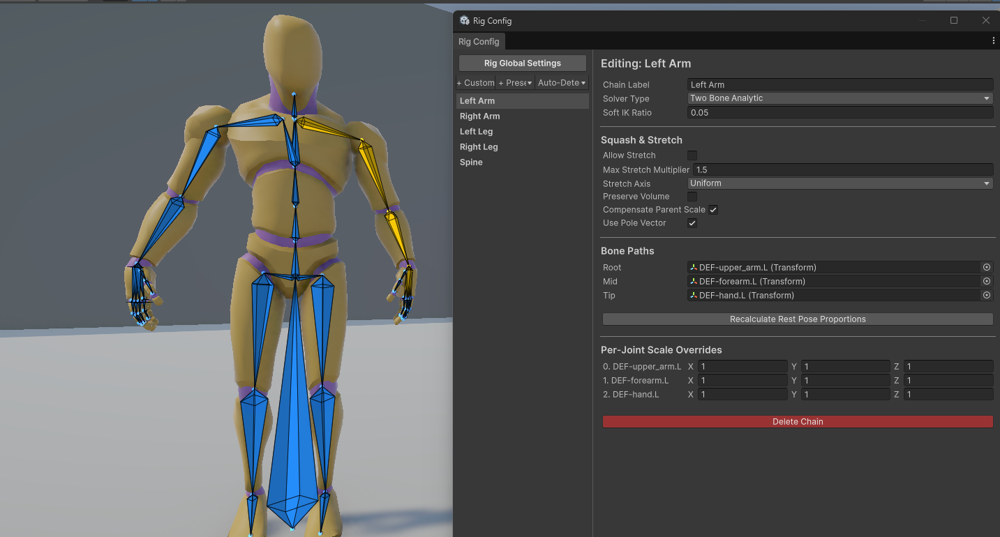
Figure 3: Rig Config Editor Window
To open the Rig Config window, click the Rig Config (🦴 Icon) on the composition top toolbar.
1. Rig Global Settings
When no specific chain is selected in the left list, the right pane displays global settings:
- Enable Full-Body IK (Root Pull): Toggles full-body IK solver reactions. When enabled, pulling hand or foot targets beyond the character's natural limb length will drag the hips and body towards the target instead of letting the limb hyper-extend.
- Base FBIK Settings: Configure the FBIK Weight and FBIK Root Bone (usually the hips or pelvis).
2. Left Pane: Chains & Presets
Manage joint chains in the list using the toolbar buttons:
- + Custom / + Preset: Adds a blank chain or instantiates templates (Left/Right Arm, Left/Right Leg, Spine, Tail).
- Auto-Detect: Scans the preview character to construct chains automatically using humanoid bones or generic heuristics.
3. Right Pane: Chain Configuration
Selecting a chain in the left list displays its properties in the details pane:
- Solver Type:
- Two Bone Analytic: Highly optimized solver restricted to exactly three joints (Root, Mid, Tip) like shoulder-elbow-wrist.
- FABRIK: A heuristic solver that supports chains of any bone count (such as tails or tentacles).
- Soft IK Ratio: A slider (0.0 to 0.5) that prevents limbs from aggressively popping when extending straight.
- Use Pole Vector: Toggles custom pole target alignment to direct joint hinge bends.
- Squash & Stretch: Toggles bone lengthening when targets are pulled beyond the natural limb span (Allow Stretch, Max Stretch Multiplier, Stretch Axis, Preserve Volume, Compensate Parent Scale).
- Twist Distribution (Roll Solvers): Prevents "candy wrapper" twisting artifacts on character limbs (such as forearms and upper arms) by distributing the source bone's twist rotation across multiple twist target bones (Enable Twist Distribution, Twist Source Bone, Twist Axis, Twist Target Bones list).
- Bone Paths: Defines the joints included in the solver.
- Per-Joint Scale Overrides: Manually compress or extend specific bones inside the chain.
4. FABRIK Joint Limits
When using the **FABRIK** solver type, you can assign physical limits to individual joints:
- Stiffness (FK Bias): A slider (0.0 to 1.0) defining joint resistance.
- Constraint Type:
- None: Free rotation.
- Hinge: Restricts rotation to a single local axis (Hinge Axis, Min/Max Angle).
- Cone: Restricts rotation to a conical range (Cone Center, Cone Angle Limit).
- Scene View Visualization: Active constraints display interactive overlays in the Scene View. You can adjust limit angles and axis directions directly using handles.
Look-At Constraint Node
The Look-At Constraint Node forces a character's spine, head, and eyes to track and look at one or more targets in 3D space. This is essential for character focus, conversation behaviors, and combat aiming.
Visual Scene View Handles
When you select a Look-At node, a visual crosshair handle representing the look-at target appears in the Scene View. Dragging this handle moves the target position dynamically, causing the character to twist their spine and head to follow in real time.
Inspector Parameter Reference
Target Selection
Configure targets in the **Targets** list. If multiple targets are active, the look-at direction is computed as a weighted average.
- Target Mode:
- Transform: Follows a specific Unity Transform GameObject.
- FX Event: Dynamic tracking that locks onto a temporary object spawned by an FX node.
- Local Offset: Follows a coordinate offset relative to the character.
- Weight / Local Offset: Mixes target influences and offsets.
Bones & Weights
- Use Humanoid Bones: Automatically detects head, spine, and eye bones.
- Head Bone Path / Spine Base Bone Path: Fields to manually assign bone paths.
- Head Weight / Spine Weight: Sets how much of the rotation is applied to the neck/head and absorbed by the spine.
Eye Tracking & Biological Jitter
- Left / Right Eye Bone Path: Fields to assign eye bones.
- Eyes Weight: Controls the focus strength of the eye bones.
- Saccade Jitter: Simulates biological eye movement by injecting minor, high-frequency micro-jitter into the eyes' tracking vector (0.0 = static gaze, 1.0 = high activity).
Limits & Easing Speed
- Max Angle: The absolute rotation boundary (0 to 180 degrees) the character is allowed to twist.
- Soft Limit Angle: Eases and slows down head turning as the target approaches the Max Angle, preventing visual popping.
- Smooth Speed: The tracking acceleration.
- Forward Axis / Up Axis: Coordinate mapping dropdowns to match the head bone's local forward alignment.
Jiggle Physics Node
The Jiggle Physics Node applies secondary spring-mass physics to chains of bones (such as hair, capes, tails, ears, or loose accessories). The physics simulation reacts dynamically to the character's primary animations and movement.
Spring-Mass Core Mechanics
The physics simulation is driven by a spring-mass solver configured in the Inspector:
- Stiffness: How strongly the bones try to return to their original animated poses (0.01 to 1.00).
- Damping: How much energy is lost per frame (0.00 to 1.00). Prevents endless oscillations.
- Mass: The resistance of the bones to motion (0.1 to 5.0). Higher mass creates more inertia and overshoot.
- Simulate in Local Space: When enabled, the simulation is computed within the character's local coordinates rather than world space.
Workflow Tip: Enable local space simulation for extremely fast-moving characters (such as characters teleporting or riding mounts) to prevent the physics from stretching or breaking during sudden displacements.
- Falloff Curves (Root-to-Tip Modulation):
- Stiffness / Damping Falloff: Standard curves where the X-axis is the index along the bone chain (0.0 = root, 1.0 = tip) and the Y-axis is the property multiplier.
- Stiffness/Damping Time Curves: Modulates properties over the absolute duration of the timeline slot.
Environment & External Forces
- Gravity / Gravity Multiplier: Direction vector and scale multiplier for gravity.
- Use Local Gravity: When active, gravity is calculated relative to the character's rotation.
- Centrifugal Multiplier: Multiplies the outward centrifugal force applied during sharp rotations.
- Wind Strength / Wind Direction: Constant wind pressure and direction vector.
- Turbulence Speed / Frequency: Generates noise in the wind force to create organic, fluttering motions.
Volume Preservation (Squash & Stretch)
To prevent jiggling chains from looking like rigid rods when stretched, you can enable volume preservation:
- Enable Squash & Stretch: Toggles procedural scale deformation.
- Max Stretch: The maximum elongation factor allowed.
- Squash Multiplier: Determines how much the bones shrink along their perpendicular axes when stretched, maintaining visual volume.
Colliders & Collision Shapes
To prevent jiggle bones from clipping through the character's body or the environment, define custom collider shapes inside the **Colliders** panel:
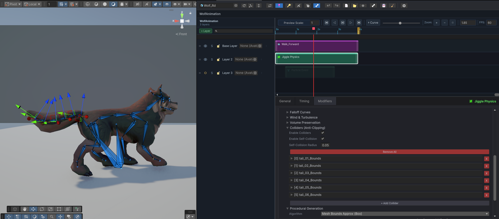
Figure 4: Configuring Jiggle Physics colliders in the Inspector and Scene View
Collision Properties
- Enable Colliders: Globally enables or disables collider interactions.
- Enable Self Collision / Self Collision Radius: Prevents bones in the jiggle chain from passing through each other.
Custom Collider Shapes
| Shape | Dimensional Properties | Setup |
|---|---|---|
| Sphere | Radius | Best for head, shoulders, or hands. |
| Capsule | Radius, Height, Capsule Axis | Best for limbs, torso, or long neck structures. |
| Box | Box Size (Width, Height, Depth) | Best for furniture, shield objects, or steps. |
| Plane | Plane Normal (Direction vector) | Creates an infinite ground boundary below which bones cannot fall. |
Each custom collider is attached to a Parent Bone Path and positioned using a Local Offset matrix.
Trajectory Override Node
The Trajectory Override Node replaces a character's root motion animation curves with a custom Bezier spline trajectory. This is ideal for steering characters along exact paths (such as combat rolls, leaps, wall runs, or scripted cinematics).
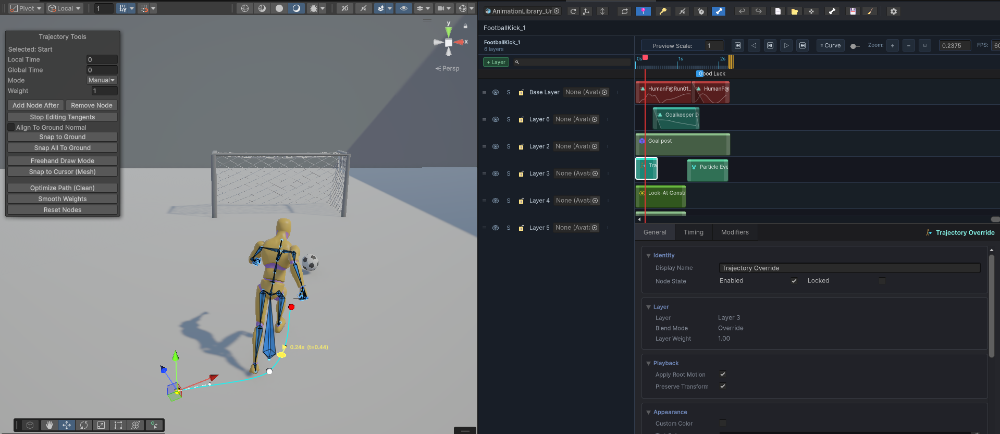
Figure 5: Bezier spline path and tangents in the Scene View
Spline Editing in the Scene View
When you select a Trajectory Override Node, visual spline controls appear in the Scene View:
- Bezier Nodes: White boxes indicating spline points. Click and drag nodes to shift the pathway.
- Tangents: Pink handles protruding from each node. Drag these to define the curve's exit and entry angles.
- Adding/Deleting Nodes: Right-click on the spline to add a new Bezier node, or select a node and press **Delete** to remove it.
- Tangent Modes: Right-click a node to set its tangent calculations:
- Auto: Calculates smooth curves automatically based on neighboring nodes.
- Split: Allows left and right tangent handles to be rotated independently to create sharp corners.
Inspector Parameter Reference
Space Configurations
- Space:
- Relative: Spline coordinates are relative to the character's starting position at the node's start time.
- Absolute: The spline is locked to absolute world-space coordinates. The character will snap to the exact world coordinates regardless of their previous location.
Speed & Easing
- Easing Curve: Drives timing along the spline. The X-axis represents normalized timeline time; the Y-axis represents progress along the spline length (0.0 = start, 1.0 = end).
Rotation & Banking
- Rotation Blend Weight: Blends the character's orientation between the animation clip's original rotation (0.0) and the spline's direction vector (1.0).
- Use Banking / Bank Multiplier: When enabled, the character procedurally leans/banks left or right into curves.
Ground Snapping (Terrain Conformance)
- Ground Layer Mask / Ground Snap Offset: Physics layers representing walkable terrain and vertical offset.
- Align to Ground Normal: Automatically rotates the character to match the slope inclination of the ground beneath the spline nodes.
Loop Options
- Is Closed Loop: Connects the final node back to the initial node, transforming the trajectory into a continuous loop track.
Visual HUD & Debug Settings
Turn these options on in the Inspector to show overlays in the Scene View:
- Show Speed Heatmap: Colors the spline path (gradient from green to red) to visually display where the character will accelerate or decelerate based on the easing curve.
- Show Path Length HUD: Displays a text box indicating the total length of the spline in meters.
- Show Per-Node Time: Prints the execution time (in seconds) next to each Bezier node.
- Show Preview Playhead: Renders a silhouette of the character at the current scrubber time along the spline path.
Workflow: Spline Sub-Path Extraction
If you need to crop the duration of a trajectory node without destroying the shape of the spline curve, click the Extract Sub-Path button in the details panel. This uses a de Casteljau subdivision algorithm to mathematically calculate new control points and tangents so the cropped segment preserves the exact visual shape of the original path.
FX Nodes Overview
FX Nodes are timeline blocks dedicated to triggering runtime events (such as playing sound effects, spawning particles, instantiating prefabs, animating attachments, or firing custom scripts) rather than animating skeletal bones.
Unlike motion nodes, FX nodes do not bake curve data into the exported Animation Clip. Instead, they are compiled into a companion FX Manifest asset which is read by runtime playback components.
Shared Parameter Reference
Every FX Node type inherits a common set of properties for timing, positioning, and socket attachment:
Timing & Loop Settings
- Event Name: A user-friendly label to organize this event.
- Loop / Blend In / Blend Out: Configures looping and fade-in/fade-out times (in seconds).
Socket Target & Attachment
- Target Human Bone: A dropdown list of standard Humanoid bones.
- Target Bone: A text field to enter a manual bone name if the character is generic.
- Transform Space: Controls how the spawned FX tracks character movement:
- Follow Target: The FX attaches as a child of the bone, translating and rotating with it.
- Spawn and Stand: Spawns at the bone's coordinates at the trigger time, but remains stationary.
- World Space: Spawns at absolute world coordinates.
Transform Overrides
- Override Position / Rotation / Scale: Custom offsets relative to the socket bone coordinate system.
Workflow: Property Overrides
The Property Overrides workflow allows you to dynamically customize public variables, fields, or component properties of the spawned effect prefab or the character's bone hierarchy directly from the composition timeline. This is ideal for altering effects per event without duplicating prefabs.
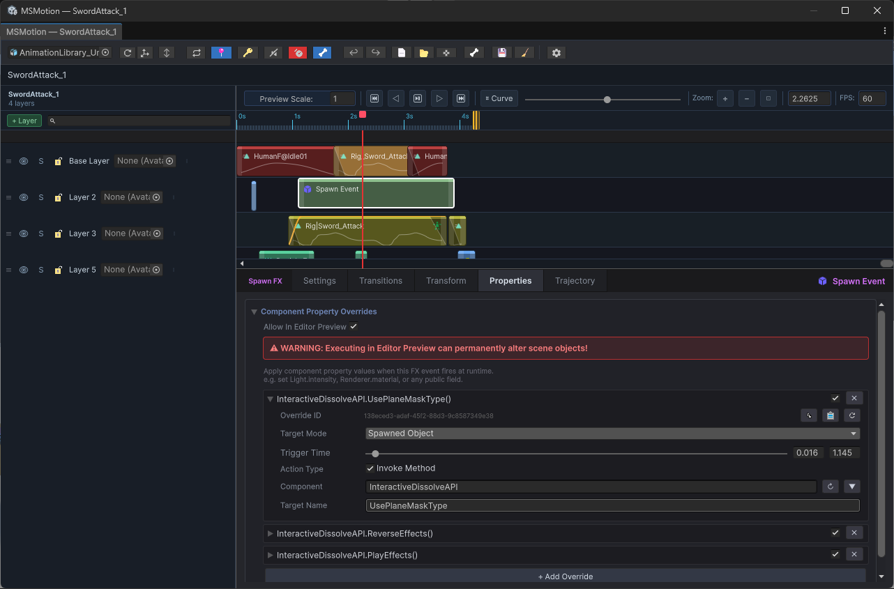
Figure 6: Dynamic Property Overrides and Method Invocation
To manage overrides, open the fourth tab in the FX node editor details panel.
- Target Selection: Select where the property modification should be applied (Root, SpawnedObject, CustomTargetBone).
- Trigger Time Configuration: Define the exact timestamp (normalized or composition time) at which the override is executed.
- Action Types & Method Invocation: Choose between **Set Property** (directly modifies a variable) or **Invoke Method** (executes a C# function).
- Target Component & Member Mappings: Map the override to a specific component (e.g.
Light,ParticleSystem) and enter the exact field/method name. Use the **Auto-Picker (▼)** to scan the target GameObject for quick assignment. - Dynamic Value & Argument Editors: The input field automatically adapts to the data type (string, int, float, bool, Vector3, Color, Enum, or Object asset).
Editor Preview Safety
By default, some dynamic effects (like custom scripts or scene property overrides) are blocked in edit mode:
Safety Warning
Enabling Allow Editor Preview Overrides allows custom scripts and overrides to execute in the Scene View while scrubbing the timeline. Use caution: poorly written scripts can permanently alter scene objects, modify assets, or throw errors in edit mode.
To test preview-safe actions, ensure the top toolbar's **Safety Toggle (FX Indicator)** is enabled.
FX Path Tools Scene Panel
When editing a spline trajectory on an FX node, a floating overlay panel titled FX Path Tools appears in the Scene View, providing three tabs:
- Node Tab: Context-sensitive properties based on viewport selection (adjust Local/Global Time, Tangent Mode, and manage path nodes).
- Presets Tab: Generate complex motion paths in one click (Parabolic Arc, Straight Line, Bounce, Zig-Zag, Ribbon, Lasso, Circle, Ellipse, Helix, Figure-8, Spirals, Sine Wave, Spring).
- Edit Tab: Utilities to reverse path direction, smooth tangents, normalize timing, subdivide segments, or mirror coordinates along local axes.
Audio FX Node
The Audio FX Node triggers audio playback at a specific timeline mark. It is commonly used for sound effects like footstep rustles, sword slashes, impact thuds, or character vocalizations.
Inspector Parameter Reference
Audio Asset & Playback Properties
- Clip: The Unity AudioClip asset played by this node.
- Volume / Pitch: Base parameters.
- Pitch Variance: Adds random pitch variance (0.0 to 1.0) to every trigger.
Workflow Tip: Set Pitch Variance to a low value (e.g.
0.05to0.10) for repetitive sounds like footsteps. This minor variation prevents the sound from feeling mechanical. - Stereo Pan: Constant panning between left and right speakers. Only active when Spatial Blend is set to 2D.
Spatialization (3D vs. 2D)
- Spatial Blend: Smoothly interpolates the sound source type (0.0 = 2D global, 1.0 = 3D world-space point source).
- Min Distance / Max Distance: The distance (in meters) governing volume roll-off.
Volume & Pitch Automation
You can fade audio parameters dynamically over the node's timeline duration:
- Use Volume/Pitch Transition In / Out: Enables fading or modulating the parameters using custom Animation Curves (Y-axis = value, X-axis = normalized time).
Camera Shake FX Node
The Camera Shake FX Node triggers procedural screen shake events (for dramatic actions like ground stomps, heavy landing impacts, spell explosions, or boss roar screens).
Cinemachine Integration
The Camera Shake node interfaces directly with Unity's Cinemachine package (using Cinemachine Impulse):
- Impulse Source Prefab: Assign a Cinemachine Impulse Source prefab. The system will instantiate this prefab at the target socket bone to fire camera shake signals directly into Cinemachine cameras.
Inspector Parameter Reference
Shake Core Properties
- Amplitude / Frequency: Scale multipliers governing shake intensity and speed of oscillations.
- Impulse Direction: A direction vector (default:
0, 1, 0) defining the primary axis of the shake impact. - Use Character Forward: When checked, rotates the Impulse Direction vector to align with the character's forward direction at the trigger time. Useful for recoil slide shakes.
- Propagation Radius: The distance (in meters) within which cameras are affected by this shake.
Amplitude & Frequency Transitions
You can automate shake intensity decay dynamically over the timeline duration:
- Use Amplitude/Frequency Transition In / Out: Enables modulating the shake strength and speed over the node duration using curves.
Particle FX Node
The Particle FX Node spawns particle systems (like dust clouds, sparks, magical bursts, or fire trails) at specific socket targets.
Inspector Parameter Reference
Particle Spawn & Playback Settings
- Prefab: The particle system prefab asset.
- Play Mode:
- OneShot: Spawns the prefab and fires a single burst of particles.
- Continuous: Instantiates the particle system and keeps it emitting particles for the entire duration of the timeline slot.
- Emit Count: The number of particles emitted during a OneShot burst trigger.
- Scale Multiplier: A scale multiplier to adjust the particle size.
- Attach to Bone: Parents the instantiated particle GameObject directly to the socket bone.
- Wait for Completion: Delays the destruction of the spawned particle GameObject until all active particles have naturally decayed, preventing ugly popping.
Emission & Scale Transitions
You can automate particle intensity and dimensions dynamically over the timeline block using custom curves:
- Use Emission/Scale Transition In / Out: Automates emission rate and physical transform size over time.
Spline Trajectory Path
- Trajectory: Expand the Trajectory foldout to configure a local Bezier spline path. You can edit control points to make particles travel along exact paths away from the character. See the **FX Path Tools** section for details.
VFX Graph FX Node
The VFX Graph FX Node triggers visual effects authored with Unity's Visual Effect Graph (VFX Graph). It provides controls for parameter bindings and spawning offsets.
Inspector Parameter Reference
Asset & Attachment Settings
- VFX Asset: The Unity Visual Effect Graph asset to trigger.
- Attach to Bone: Parents the instantiated VFX GameObject directly under the target socket bone.
- Stop at Duration End: If checked, halts the VFX system or destroys its instance as soon as the timeline block ends.
Parameter Bindings & Overrides
- Parameter Overrides: A list of property bindings. You can target specific properties inside the visual effect asset (such as float parameters, integers, or color variables) and override their values directly.
Property and Scale Transitions
To fade or scale effects dynamically, you can automate values using curves:
Easing a VFX Property
- Transition Property Name: Enter the exact string name of the float parameter inside the VFX Graph (e.g.
SpawnRateorIntensity). - Use Property Transition In / Out / Curves: Drives the named property using custom Animation Curves.
Easing VFX Local Scale
- Use Scale Transition In / Out / Curves: Enables automating the visual effect's transform size.
Trajectory Spline Path
- Trajectory: Configure a Bezier spline path to make the VFX Graph system travel along a specified vector path relative to the character.
Spawn FX Node
The Spawn FX Node instantiates a custom GameObject prefab at a specified socket target. This is useful for temporary props (like drawing a sword, spawning a shield, dropping a footstep dust-cloud decal, or shooting a projectile model).
Inspector Parameter Reference
Spawning & Pooling Settings
- Prefab: The Unity GameObject prefab asset spawned by this node.
- Attach to Bone: Parents the spawned prefab GameObject directly under the target socket bone.
- Destroy on End: If checked, the spawned GameObject is automatically destroyed as soon as the timeline block ends.
- Use Pool: When enabled, the runtime system utilizes an object pooling manager rather than performing expensive
InstantiateandDestroyoperations.Workflow Tip: Always enable Use Pool for frequent visual effects (like weapon impact sparks or footprint decals) to maintain smooth frame rates.
Scale Transitions
You can fade the spawned GameObject's scale in and out dynamically over the block's timeline range:
- Use Scale Transition In / Out / Curves: Enables animating scale using custom curves.
Trajectory Spline Path
- Trajectory: Configure a Bezier spline path to make the spawned object travel along a specified vector path.
Script Event FX Node
The Script Event FX Node triggers custom code callbacks, invokes scripting methods, or broadcasts messages at specific timeline points. This allows you to integrate custom game logic (such as deducting player mana on a spellcast frame, calling a custom combat script, or toggling weapon colliders).
Inspector Parameter Reference
Event Tag & Target Context
- Script Event Tag: A string identifier representing this event type. Your game logic scripts can listen for this specific tag to execute custom code.
- Context Target Mode: Defines which GameObject receives the scripting callback (Root, Custom Bone).
- Custom Context Human Bone / Bone Name: Specifies the target bone.
Parameter Payloads
A list of key-value parameters passed along with the script trigger. You can define arguments directly on the timeline:
- Key / Type / Value: Set variable name, type (String, Int, Float, Bool), and the value passed to the receiving script.
Method Invocation (Unity SendMessage)
You can invoke specific component methods directly:
- Use SendMessage: If checked, utilizes Unity's standard
SendMessageAPI. - SendMessage Method: Enter the exact name of the C# function to execute. The runtime will look for any active script component containing this method name on the target context GameObject and execute it.
Transform FX Node
The Transform FX Node dynamically alters the position, rotation, or scale of a target bone or socket transform. It is commonly used for procedurally scaling weapon models, offsetting limb coordinates during climbs, or twisting attachments dynamically without modifying the underlying clip assets.
Inspector Parameter Reference
Drive Targets
You can selectively toggle which components of the target bone's transform are modified:
- Drive Position: Toggles modifying bone position (Target Local Position, Position Curves).
- Drive Rotation: Toggles modifying bone rotation (Target Local Euler, Rotation Curves).
- Drive Scale: Toggles modifying bone scale (Target Local Scale, Scale Curves).
Space & Mode Settings
- Mode:
- Snap: Instantly overwrites the target bone's coordinates at the trigger start.
- Interpolate: Blends coordinates over the node's duration.
- World Space: If checked, coordinates are processed in world space relative to the scene root. If unchecked, offsets are calculated relative to the parent bone's local coordinate system.
- Preserve Previous Transform: If checked, the target bone preserves its final overridden transform state when the timeline block ends, preventing it from snapping back.
Transition Blending
To prevent sudden bone pops, you can automate easing transitions:
- Use Position / Rotation / Scale Transition In / Out: Enables transition weight curves.
Export Options
The Export Options window is used to bake a multi-layer composition, including its procedural solvers, physics modifiers, and event triggers, into a single, optimized Animation Clip or FBX asset.
To open the Export Options window, click the Export (💾 Icon) on the composition top toolbar.
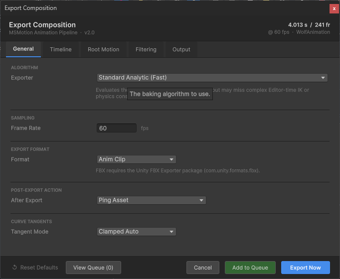
Figure 9: Export Options Window
1. General Tab
Contains parameters for the core baking algorithms, formats, and post-export actions:
- Exporter:
- Humanoid Pose Snapshot: Recommended for humanoid characters. Captures poses in normalized muscle coordinates, maintaining body scale independence.
- Generic Transform Snapshot: Directly bakes the position, rotation, and scale of every individual bone transform. Required for non-humanoid rigs.
- Frame Rate: The sample rate in frames per second (FPS) for the baked clip (range:
1to240FPS). - Format: The output asset file type (AnimClip or FBX). FBX requires the Unity FBX Exporter package.
- After Export: Post-export action (PingAsset, OpenInAnimationWindow, ApplyToFirstAnimatorState).
- Tangent Mode: Defines the slope interpolation tangent type for the output curves (ClampedAuto, Auto, Linear).
2. Timeline Tab
Allows you to bake a specific segment of the timeline rather than the full composition duration:
- Custom Range / Start / End: Configure timeline range cropping. A highlighted blue segment on the visual bar indicates the cropped sub-range.
3. Root Motion Tab
Configures how the character's overall movement and root coordinates are processed and baked:
- Export Mode (Base Mode):
- Standard: Bakes root movement exactly as solved on the timeline.
- InPlaceXZ: Strips horizontal movement. Vertical root movement (Y) is preserved.
- InPlaceFull: Strips all root displacement, forcing the root to remain locked to the starting origin.
- Per-Axis Strip: Additive overrides to lock specific channels (Strip Position X, Y, Z, and Yaw).
- Root Driver / World Space Baking: Configures what drives root motion and toggles world-space coordinates.
4. Filtering Tab
Filters which bones and properties are written to the final output file to minimize file size:
- Mask Asset: Restricts the export to a subset of character joints using an AvatarMask asset.
- Property Filter: Toggles to include or exclude Position (POS), Rotation (ROT), and Scale (SCL) curves.
5. Output Tab
Controls quality compression, event integration, and runtime manifest generation:
- Bake Events / Baking Mode: Embeds custom animation events.
- Bake Timeline Markers: Embeds custom markers from the timeline ruler as standard events.
- Rotation Mode: Quaternion (recommended) or Euler.
- Float Compression / Decimal Places: Quantizes values to clean precision noise.
- Keyframe Optimization: Removes redundant keyframes within tolerance limits (Position, Rotation, and Scale Error).
- Runtime FX (MSMotion FX Layer):
- Generate FX Manifest: Exports a custom FX manifest asset alongside the clip.
- Embed FX Trigger Events: Embeds a single event wrapper (
OnFXTrigger) per FX node on the clip.
Batch Export Queue
The Batch Export Queue is a pipeline optimization tool that allows you to queue multiple animation composition bakes and process them sequentially in a single batch. This prevents the editor from locking up repeatedly during iterative bakes.
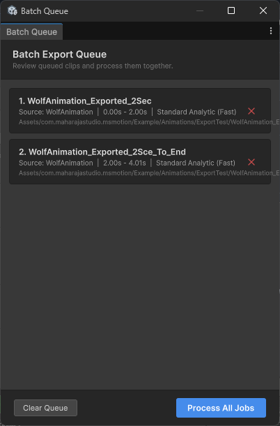
Figure 10: Batch Export Queue Window
Accessing the Batch Queue
There are two primary ways to open the Batch Export Queue window:
- Menu Bar: Choose Window > MSMotion > Batch Export Queue.
- Export Window: Click the View Queue button in the footer of the Export Options window.
Adding Jobs to the Queue
Rather than exporting a composition immediately, you can queue it:
- Open your composition and click the **Export** icon.
- Configure your settings.
- Click **Add to Queue** in the bottom footer. The window closes, and the job is added to the background queue.
Managing Queued Jobs
Inside the Batch Export Queue window, pending exports are listed as cards showing Job Index, Asset Output Name, Source Composition, Range Description, Exporter, and Target Output Path.
- Removing Jobs: Click the red cross button on the right side of any card, or click **Clear Queue** to empty the list.
Processing the Batch
Once you have added all desired compositions to the queue, click Process All Jobs in the bottom-right corner. The editor will sequentially load, solve, and bake each asset, displaying a progress tracker. When finished, the status bar will display All jobs processed successfully.
Metadata Manager
The Metadata Manager is a project utility that allows you to scan, hide, show, or permanently delete embedded **IK Stretch & Joint Scale Metadata** sub-assets across all Animation Clips in your Unity project.
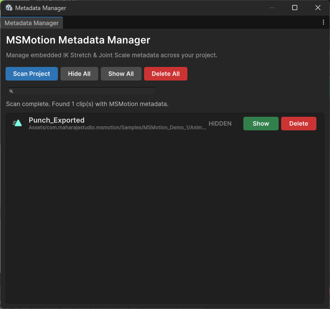
Figure 11: Metadata Manager Window
What is MSMotion Metadata?
When you bake animations that utilize procedural IK or scaling modifications, MSMotion embeds specialized **Clip Metadata** sub-assets directly into the generated .anim files. These sub-assets contain scale calibration matrices and joint-length proportions. While required for correct runtime playback:
- They are normally hidden sub-assets inside the
.animfiles. - Retiring old rigs or deleting compositions can leave orphaned metadata files inside the project database.
- Unused metadata sub-assets can accumulate over time, increasing file sizes.
Accessing the Metadata Manager
To open the utility window, choose Tools > Maharaja Studio > MsMotion > Metadata Manager from the Unity editor menu bar.
Scanning the Project
- Click **Scan Project** in the toolbar.
- A progress bar will display while the utility scans the Unity Asset Database for all
.animassets. - Upon completion, the list displays all Animation Clips containing embedded MSMotion metadata.
List Controls
Each detected clip card displays:
- Clip Icon & Title / Asset Folder Path: Identifies the clip.
- Visibility State: Displays whether the sub-asset is VISIBLE or HIDDEN in the Project window.
- Show / Hide Button: Instantly toggles the hierarchy visibility.
- Delete: Permanently removes the metadata sub-asset from the parent
.animfile.Caution: Deleting a clip's metadata permanently removes its cached IK stretch and joint scale proportions. The clip will lose stretch calculations during solver playbacks.
Global Toolbar Operations
- Hide All / Show All: Bulk visibility toggles.
- Delete All: Deletes all embedded metadata from all scanned clips.
Caution: This operation permanently deletes all IK/scale proportions from all clips. This action is irreversible.
- Search Bar: Type a clip name to filter the list instantly.
MSMotion Runtime System
MaharajaStudio MSMotion features a high-performance, modular runtime framework designed to drive characters using Unity's modern PlayableGraph API. By bypassing the rigid, memory-heavy Mecanim state machine controller model, MSMotion provides developers with direct, code-driven control over skeletal animation, visual and audio effects execution, Inverse Kinematics (IK), and real-time bone-stretching calculations.
Why MSMotion Runtime Matters
For studios and developers building performance-critical projects, the MSMotion runtime provides clear, production-tested advantages:
- Zero GC Allocations on Hot Paths: Once initialized, all play, crossfade, and event tick operations run entirely allocation-free to prevent frame-rate stuttering and GC spikes.
- On-Demand Layer Management: Mixers and playable inputs are allocated dynamically as animations play, ensuring minimal memory footprint for characters with large asset pools.
- Decoupled Procedural Solvers: FX spawning, rigging constraints, and bone scaling are split into clean, modular components that run in a single coordinate-compensated LateUpdate tick.
- Designer-Authored, Code-Driven: Designers use visual editor tools to package clips, overrides, events, and IK parameters into unified
MSMotionAnimationConfigassets. Programmers play them with a single, clear line of C#.
System Architecture
The runtime framework is divided into dedicated managers that run alongside the standard Unity Animator. When multiple components are present on the same GameObject, they coordinate automatically.
+-------------------------------------------------------------+
| Gameplay Code |
| (Triggers Play, CrossFade, and Stops) |
+-------------------------------------------------------------+
|
v
+-------------------------------------------------------------+
| MSMotionAnimator |
| (Drives PlayableGraph & Blends Layers) |
+-------------------------------------------------------------+
/ | \
v v v
+-----------------+ +-----------------+ +-----------------+
| MSMotionFXPlayer| | Stretch Applicator | | Rig Controller |
| (Audio, VFX, | | (Bone Scales & | | (Rigging & IK |
| Events Pool) | | LOD Culling) | | Constraints) |
+-----------------+ +-----------------+ +-----------------+Core Components
- MSMotionAnimator: The central driver. It manages the core
PlayableGraph, handles blending layers, and triggers fades and crossfades. - MSMotionFXPlayer: Listens to the timeline playhead and schedules visual effects, particles, sound, camera shakes, and custom script callbacks.
- MSMotionRigController: Interfaces with Unity's Animation Rigging constraints, enabling dynamic procedural aiming, foot planting, and bone offsets.
- MSMotionStretchApplicator: Applies procedural Squash & Stretch overrides directly to bones using baked keyframe curves.
Package Integration & Requirements
The runtime framework relies on the following configurations:
- Namespace:
MaharajaStudio.MSMotion.Runtime - Assembly Definition:
MaharajaStudio.MSMotion.Runtime.asmdef
Dependency Compatibility
The runtime is designed to automatically compile and scale its capabilities depending on what packages are present in your project:
| Package Dependency | Minimum Version | Feature Enabled | Script Define Symbol |
|---|---|---|---|
| Core Unity Engine | 2021.3 LTS+ | Base PlayableGraph playback | Always Enabled |
Animation Rigging (com.unity.animation.rigging) |
1.2.0 | IK constraints, custom solvers | MSMOTION_ANIMATION_RIGGING |
Cinemachine (com.unity.cinemachine) |
3.0.0 | Dynamic camera shake impulses | MSMOTION_CINEMACHINE |
Visual Effect Graph (com.unity.visualeffectgraph) |
12.0.0 | High-performance GPU particles | MSMOTION_VFX_GRAPH |
Installation
MSMotion's runtime framework compiles inside your standard Unity package hierarchy:
- Open your project in Unity 2021.3 LTS or newer.
- Import the package:
- UPM (recommended): Add the package via git URL or from disk using the Unity Package Manager window.
- Unity Package: Double-click the downloaded
.unitypackageasset.
- Click Import on the pop-up dialogue. All runtime scripts are compiled into
Assets/com.maharajastudio.animation-editor/Runtime/(or package folder). - The editor will compile and automatically define compile-time symbols based on your project's active packages.
Quick Start Guide
This guide gets your character animated and executing effects using the MSMotion runtime framework in under 5 minutes.
1. Character Component Setup
To use MSMotion runtime, attach the core components to your character's GameObject (the same GameObject hosting the Unity Animator component):
- Select your character GameObject in the Hierarchy.
- Add the MSMotion Animator component (
MSMotionAnimator):- This component automatically finds and references the Unity
Animatorcomponent. - Legacy Controller (Layer 0): Optionally assign your standard locomotion
RuntimeAnimatorController. If left empty, the character will default to a rest pose on Layer 0.
- This component automatically finds and references the Unity
- Add the FX Player component (
MSMotionFXPlayer):- Registry: Assign your project-wide
MSMotionFXRegistryasset. - The FX Player automatically links with the
MSMotionAnimatorto tick and schedule visual/sound effects on active layers.
- Registry: Assign your project-wide
- Add the Stretch Applicator component (
MSMotionStretchApplicator):- This handles real-time Squash & Stretch scaling driven by exported animation metadata curves.
- Add the Rig Controller component (
MSMotionRigController):- Only required if your animations use IK constraint overrides.
- Register your character's IK constraints under the Named Constraints list.
2. Authoring Animation Configs
MSMotion does not use string-based transition triggers or complex Animator Controller states. Instead, each animation is stored as a self-contained ScriptableObject asset:
- Right-click in the Project window and select Create > Maharaja Studio > MsMotion > Animation Config.
- Name the asset (e.g.
SwordAttack_1.asset). - In the Inspector, configure the following:
- Clip: Assign your native
.animAnimation Clip. - Manifest: Assign the corresponding
.assetmanifest generated by the MSMotion Exporter. - Metadata: Assign the scale/stretch metadata asset (typically embedded inside or exported next to the clip).
- Layer: Assign the PlayableGraph layer index (e.g.,
1for upper body,2for full-body overrides). - Fade In / Fade Out: Set custom blend durations in seconds (or leave at
0for auto-computation based on 10% of the clip's length).
- Clip: Assign your native
3. Scripting Playback
To trigger animations from your gameplay code, reference the MSMotionAnimator and your config assets, then call CrossFade() or Play():
using UnityEngine;
using MaharajaStudio.MSMotion.Runtime;
public class CharacterController : MonoBehaviour
{
[Header("MSMotion References")]
[SerializeField] private MSMotionAnimator _animator;
[Header("Animation Config Assets")]
[SerializeField] private MSMotionAnimationConfig _idleConfig;
[SerializeField] private MSMotionAnimationConfig _slashConfig;
private void Update()
{
// 1. Smoothly transition to a heavy slash animation on Layer 1
if (Input.GetKeyDown(KeyCode.E))
{
// Crossfade will blend out whatever is currently playing on the config's layer
_animator.CrossFade(_slashConfig);
}
// 2. Play then automatically transition back
if (Input.GetKeyDown(KeyCode.Q))
{
// Queue Q after E sequentially
_ = _animator.PlayThenCrossFade(_slashConfig, _idleConfig);
}
// 3. Immediately halt playback
if (Input.GetKeyDown(KeyCode.Space))
{
_animator.Stop(_slashConfig);
}
}
}4. Overriding FX Parameters at Runtime
To change sounds or particle prefabs dynamically (for example, playing different impacts based on weapon type or floor material), use Runtime FX Overrides.
These override containers are passed to MSMotionFXPlayer and apply overrides safely without modifying your ScriptableObject assets on disk:
using UnityEngine;
using MaharajaStudio.MSMotion.Runtime;
public class DynamicWeaponFX : MonoBehaviour
{
[SerializeField] private MSMotionFXPlayer _fxPlayer;
[SerializeField] private AudioClip _heavyMetalImpactClip;
[SerializeField] private GameObject _fireSparkPrefab;
public void ApplyHeavyWeaponOverrides()
{
// Override the audio clip for event "WeaponSlashSFX"
var audioOverride = new MSMotionAudioFXOverride
{
EventId = "WeaponSlashSFX",
OverrideClip = true,
Clip = _heavyMetalImpactClip,
OverrideVolume = true,
Volume = 1.0f,
OverridePitch = true,
Pitch = 0.75f // deeper pitch for heavy weapon
};
// Override the particle prefab for event "SlashVFX"
var particleOverride = new MSMotionParticleFXOverride
{
EventId = "SlashVFX",
OverridePrefab = true,
Prefab = _fireSparkPrefab,
OverrideScaleMultiplier = true,
ScaleMultiplier = 1.5f
};
// Apply to player - these immediately take priority
_fxPlayer.SetRuntimeOverride(audioOverride);
_fxPlayer.SetRuntimeOverride(particleOverride);
}
public void ClearWeaponOverrides()
{
_fxPlayer.ClearAllOverrides();
}
}Core Animation System
At the center of MSMotion's execution pipeline is the core animation playback system. Driven by Unity's low-level PlayableGraph API, this system replaces standard Animator Controllers with code-directed blending, dynamic layer allocation, and strict allocation-free runtime updates.
PlayableGraph Architecture
MSMotionAnimator constructs a custom PlayableGraph at runtime. The root of this graph is an AnimationLayerMixerPlayable.
- Layer 0 (Base Layer): Dedicated to locomotion. It can evaluate a standard Unity
RuntimeAnimatorControlleror fallback to a default idle clip. - Layer 1+ (Override/Action Layers): Created on demand. As you play animations on higher indexes, the graph dynamically grows to accommodate new mixer inputs, ensuring zero overhead for unused layers.
[AnimationPlayableOutput]
|
[AnimationLayerMixerPlayable] (Root)
/ | \
[Layer 0] [Layer 1] [Layer 2] ...
(Locomotion) (Attack) (Emote)The 2-Input Layer Mixer Pattern
To prevent skeletal popping and zero-transform squashing (where an empty or uninitialized track evaluates transforms to 0,0,0 and crushes the model), MSMotion implements two runtime layer configurations:
1. Mixer Mode (Idle Fallback)
If a layer has a default idle clip assigned (via _defaultIdleClips in the Inspector), the allocator binds an AnimationMixerPlayable sub-mixer to that layer slot.
- Input 0: The looping default/idle clip.
- Input 1: The active overriding action clip.
- The root layer weight is kept at
1.0, and crossfading transitions interpolate the weights inside this sub-mixer (e.g. fading Input 1 from0to1while fading Input 0 from1to0).
2. Direct Mode (No Idle Fallback)
If no idle clip is declared for a layer, creating a sub-mixer would squash the character when no clip is playing.
- Instead, the
AnimationClipPlayableis connected directly to the rootAnimationLayerMixerPlayable. - The root layer's weight starts at
0.0and is faded up dynamically byMSMotionAnimator.
MSMotionAnimator API Reference
MaharajaStudio.MSMotion.Runtime.MSMotionAnimator : MonoBehaviour
The primary playback driver component. Must reside on the same GameObject as the Unity Animator.
Inspector Configuration Fields
RuntimeAnimatorController _legacyController(locomotion): Locomotion blend controller assigned to Layer 0.AnimationClip[] _defaultIdleClips(per layer): Default clip played on each layer when no animation is active (e.g. index 0 = Layer 0 fallback, index 1 = Layer 1 fallback).MSMotionFXPlayer _fxPlayer: References the FX player. Automatically retrieved from the same GameObject if left unassigned.MSMotionStretchApplicator _stretchApplicator: References the stretch applicator. Automatically retrieved if left unassigned.MSMotionRigController _rigController: References the rig controller. Automatically retrieved if left unassigned.bool _applyRootMotionDirectly: If true, MSMotionAnimator applies root motion delta translations and rotations directly to the character's Transform.bool _applyFootIKOnIdle: If true, applies Unity's built-in Foot IK to default idle clips.
Events
public event Action<MSMotionAnimationConfig> OnAnimationStarted;- Fires when an animation begins playing (at the start of its fade-in).
public event Action<MSMotionAnimationConfig> OnAnimationCompleted;- Fires when a non-looping animation naturally finishes (after its fade-out completes).
public event Action<MSMotionAnimationConfig> OnAnimationStopped;- Fires when an animation is explicitly stopped via code.
public event Action<Vector3, Quaternion> OnRootMotionDelta;- Fires every frame inside
OnAnimatorMovewith the translation vector and rotation delta for the current frame. Use this to manually apply root motion in custom controllers.
- Fires every frame inside
Methods
Play
public void Play(MSMotionAnimationConfig config);Plays the animation configuration immediately with a hard cut (no fade-in). Any active animation on the same layer is stopped instantly.
CrossFade
public void CrossFade(MSMotionAnimationConfig config, float fadeOverride = -1f);Smoothly transitions to the new animation configuration. fadeOverride overrides both the fade-in and fade-out durations if greater than 0f.
PlayThenCrossFade
public async Awaitable PlayThenCrossFade(MSMotionAnimationConfig current, MSMotionAnimationConfig next);Plays the current config, waits for its active duration to reach its fade-out threshold, and then smoothly crossfades into next.
Stop / StopSmoothly / StopAll
public void Stop(MSMotionAnimationConfig config);: Immediately stops the animation, snapping the layer weight back to 0.public void StopSmoothly(MSMotionAnimationConfig config);: Smoothly fades out the active animation over its configured fade-out duration.public void StopAll();: Instantly halts playback across all layers, returning all layers to idle or bind poses, and terminates all active sustained FX.
Playback Control & Weights
public void Pause(int layer)/public void Pause(MSMotionAnimationConfig config): Pauses playback on the layer (sets play speed to 0).public void Resume(int layer)/public void Resume(MSMotionAnimationConfig config): Resumes playback, restoring the speed defined in the active config.public void PauseAll()/public void ResumeAll(): Pauses or resumes all active animation playables.public void SetLayerWeight(int layer, float weight): Instantly sets the root layer mixer weight (clamped[0,1]).public void FadeLayerWeight(int layer, float targetWeight, float duration): Asynchronously interpolates the root layer weight to target weight over duration seconds.public void SetPlaybackSpeed(int layer, float speed)/public void SetPlaybackSpeed(MSMotionAnimationConfig config, float speed): Overrides the active animation's speed multiplier at runtime.
Query Methods
public bool IsPlaying(MSMotionAnimationConfig config);: True if the config is active on its layer.public bool IsPlaying(int layer);: True if any action is playing on the layer index.public float GetNormalizedTime(int layer);: Returns playback progress[0, 1]on the layer.public float GetNormalizedTime(MSMotionAnimationConfig config);: Returns playback progress[0, 1]of the specific config.public float GetCurrentTime(int layer);: Returns the absolute playback head position in seconds.public MSMotionAnimationConfig GetActiveConfig(int layer);: Returns the active config asset on the layer.public float GetActiveWeight(int layer);: Returns the current layer blend weight.public int GetAllocatedLayerCount();: Returns total layers currently allocated in the graph.public AnimationClip GetCurrentClip(int layer);: Retrieves the currently activeAnimationClipon the layer.public float GetClipLength(int layer);: Returns active clip length in seconds.public float GetTimeRemaining(int layer);: Returns remaining play duration (factors loop iterations).public float GetPlaybackSpeedMultiplier(int layer);: Returns the custom speed multiplier currently applied to the layer.public float GetEffectivePlaybackSpeed(int layer);: Returns the true real-world playback speed (combining clip base speed, layer multiplier, and globalAnimator.speed).public bool IsPaused(int layer);: Returns true if the animation on the given layer is actively paused.public bool IsFading(int layer);: Returns true if the layer is currently crossfading or transitioning weights.public UnityEngine.Playables.Playable GetActivePlayable(int layer);: Returns the generic activePlayablestruct for advanced graph modifications.public UnityEngine.Animations.AnimationClipPlayable GetActiveAnimationClipPlayable(int layer);: Returns the underlyingAnimationClipPlayableif present.public UnityEngine.Animations.AnimatorControllerPlayable GetAnimatorControllerPlayable();: Returns the legacy controller playable running on Layer 0, if assigned.
MSMotionAnimationConfig Reference
MaharajaStudio.MSMotion.Runtime.MSMotionAnimationConfig : ScriptableObject
Drag-and-drop asset declaring playback settings. Create via: Assets > Create > Maharaja Studio > MsMotion > Animation Config.
| Property | Type | Description |
|---|---|---|
Clip |
AnimationClip |
The native animation clip. *Required.* |
Manifest |
MSMotionFXManifest |
The FX event markers asset generated by the exporter. |
Metadata |
MSMotionClipMetadata |
Baked scale and stretch curve metadata. |
Layer |
int |
Layer index (0 is base, 1+ are overrides). Default is 1. |
Mask |
AvatarMask |
Limits the animation to specific bones. *Null = Full Body.* |
IsAdditive |
bool |
Blends additively on top of lower layers. |
IsLoop |
bool |
Loops the animation clip. |
ApplyFootIK |
bool |
Applies Unity's built-in Foot IK to the playable. |
ScaleFXWithLayerWeight |
bool |
Scales volume/emission of spawned FX by the layer weight. |
FXWeightMultiplier |
float |
Additional volume/emission multiplier. Default: 1.0. |
PlaybackSpeed |
float |
Playback speed multiplier. Default: 1.0. |
FXRegistryOverride |
MSMotionFXRegistry |
Overrides the global FX registry while this animation plays. |
IKOverrides |
IReadOnlyList<MSMotionIKEntry> |
Dynamic constraint mappings evaluated by MSMotionRigController. |
ResolvedFadeInTime |
float |
Computed fade-in time (returns customized time, or defaults to 10% of clip duration clamped to [0.05, 0.3] seconds). |
ResolvedFadeOutTime |
float |
Computed fade-out time. |
Custom Sequences & Blending Example
using UnityEngine;
using MaharajaStudio.MSMotion.Runtime;
public class AdvancedAnimatorController : MonoBehaviour
{
[SerializeField] private MSMotionAnimator _animator;
[SerializeField] private MSMotionAnimationConfig _heavyAttack;
[SerializeField] private MSMotionAnimationConfig _recoveryIdle;
private void Update()
{
if (Input.GetKeyDown(KeyCode.Alpha1))
{
// Trigger heavy attack and transition to recovery once complete
_ = PlayCombatChain();
}
if (Input.GetKeyDown(KeyCode.Alpha2))
{
// Dynamically slow down playback speed
_animator.SetPlaybackSpeed(_heavyAttack, 0.5f);
}
}
private async Awaitable PlayCombatChain()
{
Debug.Log("Starting Attack Chain...");
// Play attack and automatically crossfade to recovery
await _animator.PlayThenCrossFade(_heavyAttack, _recoveryIdle);
Debug.Log("Combat Chain Completed and Returned to Recovery Idle.");
}
}Rigging & IK System
MSMotion integrates procedural skeletal control with Unity's modern Animation Rigging package via the MSMotionRigController component. By mapping rigging constraints to abstract string identifiers, the system completely decouples runtime targeting logic from individual character bone structures.
The Decoupling Pattern
Standard IK setups bind gameplay targets directly to specific skeletal transforms, making it difficult to reuse animations across characters with different bone hierarchies. MSMotion solves this with a Slot-Based Decoupling Pattern:
- Named Constraints: In the Inspector, the developer maps a string
Id(e.g."LeftFoot","LookAtTarget") to a specificIRigConstraintcomponent on the character (such as aTwoBoneIKConstraintorMultiAimConstraint). - Asset Configuration: The
MSMotionAnimationConfigdefines constraint behaviors by referencing the stringIdinside itsIKOverrideslist. - Dynamic Execution: When the animator plays the config, it requests
MSMotionRigControllerto activate the slot. The controller resolves the mapping and drives the target weight, leaving gameplay code to only manage target positions.
This means the exact same MSMotionAnimationConfig asset can play on a giant, a goblin, or a standard hero, provided each character has registered the correct constraint slots.
Blending & Timing Rules
Each IK override entry (MSMotionIKEntry) specifies custom timing parameters:
- Target Weight: The target weight
[0, 1]to apply to the constraint. - Delay Start / End: Delays in seconds before blending the IK constraint in or out.
- Fade In / Fade Out: Speeds to ramp the constraint weight (falls back to animation fade speeds if set to
0). - Blend Mode:
Override: Linearly blends towards the target weight, overriding lower layers.Additive: Adds weight on top of lower active solvers (clamped to a max of1.0).
Pole Vector Stabilization (Hint Math)
For limbs using a TwoBoneIKConstraint (such as arms and legs), rapid movement of the target can cause joints (like knees or elbows) to flip violently. MSMotionRigController includes a built-in mathematical stabilization solver. If an IK constraint target is set and an IK hint (pole vector) transform is registered, the controller evaluates the bone geometry of the limb every frame, computes a stable bend normal vector, and applies a spherical interpolation (Slerp) blending toward the limb's natural rest bend direction.
Cross-Layer Suppression
If multiple override layers are active simultaneously (for example, a character running while executing a dynamic sword slash), the IK solvers on lower layers should not distort the active upper-body action. If _enableCrossLayerSuppression is enabled, the controller checks the weight of higher layers. If a higher layer is active, non-additive, and has an AvatarMask that covers the bone driven by a lower layer's IK constraint, the controller reduces the effective blend weight of that lower IK solver proportionally.
MSMotionRigController API Reference
MaharajaStudio.MSMotion.Runtime.MSMotionRigController : MonoBehaviour
public void SetTarget(string constraintId, Transform target);: Assigns a world-spaceTransformtarget to the specified constraint slot. The target is tracked dynamically every frame.public void ClearTarget(string constraintId);: Clears the active target, disabling the constraint.public void RegisterConstraint(string id, IRigConstraint constraint);: Registers an IK constraint programmatically (useful for procedurally spawned rigs or modular characters). Replaces any existing slot with the same ID.public void UnregisterConstraint(string id);: Removes the slot mapping from the lookup table.public void PauseIK();: Pauses all IK evaluations, locking the current weight levels in place.public void ResumeIK();: Resumes dynamic weight and target evaluations.public void SetCrossLayerSuppression(bool enable);: Enables or disables automatic weight culling based on higher active layers' masks.public float GetConstraintWeight(string constraintId);: Returns the actual final weight[0, 1]applied to the constraint component in the current frame.public bool IsConstraintActive(string constraintId);: Returns true if the constraint is actively being driven by any playing animation layer.public IRigConstraint GetConstraint(string constraintId);: Retrieves the underlying UnityIRigConstraintinterface matching the slot ID (useful for low-level custom modifications).public int GetRegisteredConstraintCount();: Returns the total number of constraint slots currently registered on this rig controller.
Procedural Aiming C# Example
using UnityEngine;
using MaharajaStudio.MSMotion.Runtime;
public class CharacterAimer : MonoBehaviour
{
[SerializeField] private MSMotionRigController _rigController;
[SerializeField] private string _aimConstraintId = "HeadLookAt";
[SerializeField] private Transform _targetTransform;
[SerializeField] private float _aimDistanceThreshold = 15f;
private void Update()
{
if (_targetTransform == null) return;
float distance = Vector3.Distance(transform.position, _targetTransform.position);
if (distance <= _aimDistanceThreshold)
{
_rigController.SetTarget(_aimConstraintId, _targetTransform);
}
else
{
_rigController.ClearTarget(_aimConstraintId);
}
}
}Stretch & Scale System
MSMotion includes a high-performance procedural scaling solver managed by the MSMotionStretchApplicator component. It applies Squash & Stretch scale transformations directly to skeletal bone transforms at runtime based on curves baked into animation metadata.
Standalone vs. Driver Execution Modes
The applicator adapts automatically to your character's setup, running in one of two modes:
1. Standalone (Vanilla) Mode
If no MSMotionAnimator is present on the GameObject, the applicator runs in standalone mode:
- Every frame, it polls
Animator.GetCurrentAnimatorClipInfo(0)to detect active animation clips. - Upon clip change, it searches for an embedded
MSMotionClipMetadatasub-asset and evaluates scale curves in sync with the state's normalized playback time.
2. Driver Mode
When bound to an MSMotionAnimator driver component, the applicator bypasses Animator polling. The animator actively updates the applicator, allowing it to blend scale curves across **multiple layers** simultaneously, respecting active layer weights, additive blending modes, and isolated bone AvatarMask boundaries.
Cross-Layer Scale Suppression
To maintain visual consistency during multi-layer blending, lower-layer scale curves must not distort bone segments actively driven by higher-priority actions. If _enableCrossLayerSuppression is enabled, the applicator evaluates bones layer-by-layer in ascending order and dynamically suppresses lower-layer scale curve weights if a higher, non-additive layer is active and its mask includes the same bone:
Effective Weight = Layer Weight × (1 - Higher Layer Weight)
Level-of-Detail (LOD) & Distance Culling
Procedurally modifying bone scales every frame across dozens of characters can quickly exhaust CPU resources. To prevent this, MSMotionStretchApplicator implements a distance-based Level-of-Detail (LOD) optimization system that dynamically adjusts evaluation intervals:
[Camera] ===== Near =====> [ Near LOD: Tick Every Frame ]
===== Mid ======> [ Mid LOD: Tick Every N Frames ]
===== Far ======> [ Far LOD: Capped / Restored Bind Scale ]| LOD Zone | Distance Condition | Evaluation Interval | Behavior |
|---|---|---|---|
| Near Zone | Distance ≤ Near Threshold | Every frame (Interval = 1) |
Full-frequency evaluation for close-up animations. |
| Mid Zone | Near Threshold < Distance ≤ Far Threshold | Every N frames (Interval = MidInterval) |
Evaluates scale curves every N frames, skipping updates in-between to reduce CPU overhead. |
| Far Zone | Distance > Far Threshold | Disabled (Interval = 0) |
Evaluation is completely suspended. Bones are instantly restored to their default bind-pose scales. |
MSMotionStretchApplicator API Reference
MaharajaStudio.MSMotion.Runtime.MSMotionStretchApplicator : MonoBehaviour
public void PauseStretch();/public void ResumeStretch();: Freezes or resumes real-time scale calculations.public void ClearVanillaStretch();: Instantly restores all affected bones to their original bind-pose local scales when in Standalone mode.public void SetLODSettings(float nearDistance, float farDistance, int midLODInterval);: Configures LOD thresholds and frame-skipping intervals at runtime.public int GetCurrentLODInterval();: Returns the currently active LOD update interval.public void SetCrossLayerSuppression(bool enable);: Toggles whether higher-layer Avatar Masks dynamically suppress lower-layer bone scale curves.public int GetActiveStretchLayerCount();: Returns the number of layers actively contributing to stretch calculations (always returns 0 in Standalone mode).public void SetMetadata(MSMotionClipMetadata metadata);: Manually assigns a metadata asset. Only applicable when running in Standalone (Vanilla) mode.
LOD Configuration C# Example
This example demonstrates how to adjust culling thresholds dynamically based on graphics quality settings:
using UnityEngine;
using MaharajaStudio.MSMotion.Runtime;
public class PerformanceManager : MonoBehaviour
{
[SerializeField] private MSMotionStretchApplicator[] _applicators;
public void ApplyGraphicsSettings(bool highPerformanceMode)
{
foreach (var applicator in _applicators)
{
if (highPerformanceMode)
{
// Strict performance: cull early, skip frames frequently in mid-range
applicator.SetLODSettings(5f, 25f, 4);
}
else
{
// High visual quality: extend full-rate evaluation distance
applicator.SetLODSettings(15f, 60f, 2);
}
}
Debug.Log($"[Performance] Adjusted {_applicators.Length} stretch applicators.");
}
}FX & Event System
MSMotion includes a robust, frame-accurate runtime FX execution engine managed by the MSMotionFXPlayer component. This system schedules, pools, and blends audio clips, particle bursts, visual effect graphs, camera shakes, procedural transform adjustments, and custom game logic callbacks in sync with character animation frames.
Dispatch Mechanisms
The FX Player supports two high-performance execution modes, which are transition automatic:
1. Animation Event Mode (OnFXTrigger)
For standalone or legacy projects, the exported .anim clip embeds exactly one AnimationEvent per FX node. This event calls OnFXTrigger(string eventId), performing a fast dictionary lookup on the active manifest and immediately firing the matching effect. This minimizes overhead by avoiding per-frame timeline scrubbing.
2. Driver Mode (TickByDriver)
When an MSMotionFXPlayer resides alongside an MSMotionAnimator, the animator binds the player into Driver Mode. The playback dispatcher completely ignores OnFXTrigger animation events. Instead, the animator calls TickByDriver(layer, compositionTime) every LateUpdate frame, giving the engine precise sub-frame scrubbing capability.
The Three-Level Priority Override System
MSMotion utilizes an override structure designed to allow assets (e.g., footstep sounds on sand vs. concrete) to be swapped without needing to re-author or re-export animation clips:
+---------------------------------------------+
| 3. Runtime Overrides (Highest Priority) | -> Set via SetRuntimeOverride() in C#
+---------------------------------------------+
|
+---------------------------------------------+
| 2. Global Registry Overrides | -> Assigned via MSMotionFXRegistry asset
+---------------------------------------------+
|
+---------------------------------------------+
| 1. Manifest Defaults (Lowest Priority) | -> Authored in the visual timeline editor
+---------------------------------------------+- Manifest Defaults: The fallback assets and timing configurations baked into the exported
MSMotionFXManifest. - Global Registry Overrides: An
MSMotionFXRegistryScriptableObject mapping stableEventIdkeys to customized assets. If an entry is found, it overrides the manifest default. - Runtime Overrides: Dynamic override containers (
MSMotionAudioFXOverride, etc.) set programmatically via C# on a specific character instance. These take absolute priority and never modify assets on disk.
Detailed FX Event Reference
All events inherit from the base MSMotionFXEvent class, which declares common fields: EventId (GUID string), TriggerTime / Duration (seconds), Loop (bool), BlendIn / BlendOut (seconds), TargetBone (string) / TargetHumanBone (HumanBodyBones), and TransformSpace (FXTransformSpace: FollowTarget or FixedAtSpawnLocation).
-
AudioFXEvent: Plays an
AudioClipat the target bone.Clip(AudioClip): The audio clip asset.Volume/Pitch(float): Base playback parameters.PitchVariance(float): Adds random pitch variations per play:Pitch +/- Random(-Variance, +Variance).SpatialBlend(float):0= 2D (stereo UI/music),1= 3D (world-space spatial).MinDistance/MaxDistance(float): 3D roll-off bounds.VolumeTransitionInCurve/VolumeTransitionOutCurve(AnimationCurve): Volume ramps.
-
ParticleFXEvent: Spawns a legacy Particle System prefab.
Prefab(GameObject): Prefab to instantiate.PlayMode(ParticlePlayMode):OneShot(single burst),Sustained(loops over duration), orManualEmit(triggersEmit(EmitCount)).EmitCount(int): Number of manual particles to emit.ScaleMultiplier(float): Uniform local scale adjustment.AttachToBone(bool): Parent the instance under the target bone.WaitForCompletion(bool): Restores the instance to the pool only after all particles have decayed.
-
VFXGraphFXEvent: Spawns a Visual Effect Graph asset.
VFXAsset(VisualEffectAsset): The graph to run.ParameterOverrides(List<VFXParameterOverride>): Unions of types (float, int, bool, Vector4, Texture, Mesh) mapped to exposed graph parameters.StopAtDurationEnd(bool): Sends a "Stop" event to the graph at the end of the duration.TransitionPropertyName(string): Exposed property name (e.g.SpawnRate) scaled by the event weight transitions.
-
CameraShakeFXEvent: Triggers a Cinemachine impulse shake.
ImpulseSourcePrefab(GameObject): Cinemachine impulse source component host.Amplitude/Frequency(float): Intensity and speed multipliers.ImpulseDirection(Vector3): Force vector direction.UseCharacterForward(bool): Rotates the direction relative to the character's facing direction.PropagationRadius(float): Distance limit for cameras to feel the impulse.
-
SpawnFXEvent: Instantiates a generic GameObject prefab.
Prefab(GameObject): Prefab to spawn.DestroyOnEnd(bool): If true, destroys (or returns to pool) the instance when the event duration expires.UsePool(bool): UsesMSMotionFXPoolto prevent instantiation garbage collection.AttachToBone(bool): Parent the spawned object to the target socket.
-
TransformFXEvent: Drives bone or target transform offsets over time.
Mode(TransformFXMode):Snap(immediate),Lerp(linear blend),SmoothStep(slow-fast-slow), orCurve(evaluates custom curves).DrivePosition/DriveRotation/DriveScale(bool): Property switches.TargetLocalPosition/TargetLocalEuler/TargetLocalScale(Vector3): Goal properties.PreservePreviousTransform(bool): Blends smoothly starting from the bone's pre-event transform instead of cutting.
-
ScriptFXEvent: Triggers developer-defined logic callbacks.
ScriptEventTag(string): Identifier passed to listeners (e.g.,FootstepRight,ApplyDamage).ContextTargetMode(FXOverrideTargetMode): Target resolution (Root,NodeTargetBone,SpawnedObject).Parameters(List<ScriptFXParameter>): Key-value pairs containing floats, strings, ints, colors, and asset references.UseSendMessage(bool): Automatically executesGameObject.SendMessageon the target.SendMessageMethod(string): The script method name to invoke.
Spline Trajectory System
Both ParticleFXEvent and VFXGraphFXEvent support Bezier Trajectories (FXTrajectoryData). When enabled, the FX Player hands evaluation to FXTrajectoryEvaluator to move the effect along a bezier spline path over its active duration:
- Coordinate Space: Can evaluate in
AbsoluteWorldspace orRelativeToAnchor(relative to the target bone at the moment of spawning). - Align to Path: If true, rotates the spawned object to face the forward tangent of the path (useful for projectiles or trailing VFX).
- Easing Curve: An
AnimationCurveremapping time[0,1]to accelerate, decelerate, or loop travel along the spline.
Global Script Event Bus
When a ScriptFXEvent is fired, it triggers the player's local OnScriptEvent. If a global MSMotionScriptEventBus asset is assigned to the active registry, the player forwards the event globally:
using UnityEngine;
using MaharajaStudio.MSMotion.Runtime;
public class GameSoundManager : MonoBehaviour
{
// Assign the same ScriptEventBus asset here as in your FXRegistry
[SerializeField] private MSMotionScriptEventBus _globalEventBus;
private void OnEnable()
{
_globalEventBus.OnEvent += HandleGlobalFXEvent;
}
private void OnDisable()
{
_globalEventBus.OnEvent -= HandleGlobalFXEvent;
}
private void HandleGlobalFXEvent(ScriptFXEvent ev)
{
if (ev.ScriptEventTag == "Footstep")
{
string material = ev.GetString("Material", "Grass");
Vector3 worldPos = ev.ContextTarget != null ? ev.ContextTarget.transform.position : Vector3.zero;
PlayFootstepSFX(material, worldPos);
}
}
private void PlayFootstepSFX(string material, Vector3 position)
{
// Integration code...
Debug.Log($"Playing footstep sound for: {material} at {position}");
}
}FX Overrides in Detail
1. Asset-Based Overrides
Exposed in the MSMotionFXRegistry ScriptableObject. Each override class corresponds to an event type and contains a series of boolean switches (OverrideX) and override value fields. At trigger time, the player evaluates these overrides:
- MSMotionAudioFXOverride:
OverrideClip(AudioClip),OverrideVolume(float),OverridePitch(float),OverrideSpatialBlend(float),OverrideMinDistance(float),OverrideMaxDistance(float),OverrideStereoPan(float),OverrideLoop(bool). - MSMotionParticleFXOverride:
OverridePrefab(GameObject),OverrideScaleMultiplier(float),OverridePlayMode(ParticlePlayMode),OverrideEmitCount(int),OverrideAttachToBone(bool),OverrideWaitForCompletion(bool). - MSMotionVFXGraphFXOverride:
OverrideAsset(VisualEffectAsset),OverrideStopAtDurationEnd(bool),OverrideAttachToBone(bool). - MSMotionTransformFXOverride:
OverridePrefab(GameObject),OverrideMode(TransformFXMode),OverrideDrivePosition(bool),OverrideTargetLocalPosition(Vector3),OverrideDriveRotation(bool),OverrideTargetLocalEuler(Vector3),OverrideDriveScale(bool),OverrideTargetLocalScale(Vector3). - MSMotionScriptFXOverride:
OverrideMethodName(string),OverrideContextTargetMode(FXOverrideTargetMode),OverrideCustomContextBoneName(string),OverrideCustomContextHumanBone(HumanBodyBones),OverrideUseSendMessage(bool). - MSMotionCameraShakeFXOverride:
OverrideImpulseSourcePrefab(GameObject),OverrideAmplitude(float),OverrideFrequency(float),OverrideImpulseDirection(Vector3),OverrideUseCharacterForward(bool). - MSMotionSpawnFXOverride:
OverridePrefab(GameObject),OverrideDestroyOnEnd(bool),OverrideUsePool(bool),OverrideAttachToBone(bool).
2. Runtime Overrides
For high-performance, dynamic overrides at runtime, subclass one of the MSMotionBaseFXOverride classes. These act as value containers that bypass Registry searches. Assign them using MSMotionFXPlayer.SetRuntimeOverride(overrideContainer). They take absolute priority and never modify assets on disk.
Common Base Fields
All runtime override containers inherit from MSMotionBaseFXOverride and expose the following overrides:
string EventId(Matches the authoring key)bool OverrideDuration/float Durationbool OverrideLoop/bool Loopbool OverrideBlendIn/float BlendInbool OverrideBlendOut/float BlendOutbool OverrideTransformSpace/FXTransformSpace TransformSpacebool OverrideTargetBone/string TargetBonebool OverrideTargetHumanBone/HumanBodyBones TargetHumanBonebool OverrideLocalPosition/Vector3 LocalPositionbool OverrideLocalRotationEuler/Vector3 LocalRotationEulerbool OverrideLocalScale/Vector3 LocalScaleList<FXPropertyOverrideDelta> PropertyDeltas(Granular overriding of specific dynamically targeted properties, methods, or fields)
Specialized Classes & Fields
- MSMotionAudioFXOverride:
OverrideClip(AudioClip),OverrideVolume(float),OverridePitch(float),OverrideSpatialBlend(float),OverrideMinDistance(float),OverrideMaxDistance(float),OverrideStereoPan(float). - MSMotionParticleFXOverride:
OverridePrefab(GameObject),OverrideScaleMultiplier(float),OverridePlayMode(ParticlePlayMode),OverrideEmitCount(int),OverrideAttachToBone(bool),OverrideWaitForCompletion(bool). - MSMotionVFXGraphFXOverride:
OverrideAsset(VisualEffectAsset),OverrideStopAtDurationEnd(bool),OverrideAttachToBone(bool). - MSMotionTransformFXOverride:
OverridePrefab(GameObject),OverrideMode(TransformFXMode),OverrideDrivePosition(bool),OverrideTargetLocalPosition(Vector3),OverrideDriveRotation(bool),OverrideTargetLocalEuler(Vector3),OverrideDriveScale(bool),OverrideTargetLocalScale(Vector3). - MSMotionScriptFXOverride:
OverrideMethodName(string),OverrideContextTargetMode(FXOverrideTargetMode),OverrideCustomContextBoneName(string),OverrideCustomContextHumanBone(HumanBodyBones),OverrideUseSendMessage(bool). - MSMotionCameraShakeFXOverride:
OverrideImpulseSourcePrefab(GameObject),OverrideAmplitude(float),OverrideFrequency(float),OverrideImpulseDirection(Vector3),OverrideUseCharacterForward(bool). - MSMotionSpawnFXOverride:
OverridePrefab(GameObject),OverrideDestroyOnEnd(bool),OverrideUsePool(bool),OverrideAttachToBone(bool).
Programmatic Override Example
using UnityEngine;
using MaharajaStudio.MSMotion.Runtime;
public class DynamicEnvironmentFX : MonoBehaviour
{
[SerializeField] private MSMotionFXPlayer _fxPlayer;
[SerializeField] private AudioClip _underwaterFootstepAudio;
public void EnterWaterVolume()
{
// Smoothly adjust all footstep SFX to play an underwater clip at a lower pitch
var footstepOverride = new MSMotionAudioFXOverride
{
EventId = "Footstep_SFX",
// Override base properties
OverrideBlendOut = true,
BlendOut = 0.5f, // longer fade-out in water
// Override audio properties
OverrideClip = true,
Clip = _underwaterFootstepAudio,
OverrideVolume = true,
Volume = 0.8f,
OverridePitch = true,
Pitch = 0.7f, // deep, muffled sound
// Override dynamic property (e.g., dryLevel parameter on AudioReverbFilter component)
PropertyDeltas = new System.Collections.Generic.List<FXPropertyOverrideDelta>
{
new FXPropertyOverrideDelta
{
TargetComponentTypeName = "AudioReverbFilter",
TargetPropertyName = "dryLevel",
OverrideSerializedValue = true,
SerializedValue = "-2000" // Lower dry level in water
}
}
};
_fxPlayer.SetRuntimeOverride(footstepOverride);
}
public void ExitWaterVolume()
{
_fxPlayer.ClearRuntimeOverride("Footstep_SFX");
}
}Transient Playback Overrides (Recommended)
You can pass custom overrides directly into the Animator's playback methods. These overrides will apply exclusively to the exact animation triggered, and will automatically be cleared when the animation finishes or is interrupted. This is the safest and cleanest way to alter FX without mutating your ScriptableObject configurations.
// Example: Play an animation but override its Footstep sound
var footstepOverride = new MSMotionAudioFXOverride {
EventId = "Footstep", OverrideClip = true, Clip = waterStepClip
};
_animator.Play(attackConfig, transientRuntimeOverrides: new[] { footstepOverride });Override Priority Hierarchy
Because there are multiple ways to override FX events, MSMotion evaluates them in a strict top-down priority. The first override found in this list completely replaces all lower levels:
- Transient Runtime Override: (
MSMotionBaseFXOverridepassed intoPlay()) - Highest priority, scopes to exact playback instance. - Global Runtime Override: (Set via
FXPlayer.SetRuntimeOverride()) - Applies to all animations until manually cleared. - Transient Registry: (
MSMotionFXRegistrypassed intoPlay()) - Config Registry: (
FXRegistryOverridebaked into theMSMotionAnimationConfigScriptableObject) - Global Registry: (The
MSMotionFXRegistryassigned directly to theMSMotionFXPlayerInspector) - Manifest Default: (The base values authored in the Animation Window) - Lowest priority.
Speed Compensation & Speed Tracking
When a character's animation is slowed down (for example, in bullet-time or slow-motion), sustained effects like audio loops or particle emissions must adjust their lifetimes to match.
The FX Player supports two timing compensation modes:
- Automatic speed tracking: Call
_fxPlayer.SetAnimatorSpeedTracking(true). The component automatically reads the standardAnimator.speedscale each LateUpdate and scales internal delta times accordingly. - Manual speed setting: Call
_fxPlayer.SetPlaybackSpeed(float speed). Useful if you want the visual effects to run at a different speed than the skeletal animation.
MSMotionFXPlayer API Reference
MaharajaStudio.MSMotion.Runtime.MSMotionFXPlayer : MonoBehaviour
The runtime manager component that instantiates and schedules audio, visual, and script effects. Must reside on the same GameObject as the Unity Animator.
Events
public event Action<ScriptFXEvent> OnScriptEvent;- Fired whenever a
ScriptFXEventis triggered on any active animation layer. Use this to bind gameplay logic handlers.
- Fired whenever a
Dispatching & Controls
public void SwitchManifest(MSMotionFXManifest manifest);: Switches the active default manifest. Stops all currently active sustained effects from the previous manifest and resets evaluation markers.public void PauseFX();: Suspends the dispatching of new FX events. Currently active sustained effects continue playing.public void ResumeFX();: Resumes scheduling and triggering new events.public void PauseActiveFX();: Pauses playback of all currently active sustained effects (pauses audio sources, visual effect graphs, and halts particle systems).public void ResumeActiveFX();: Resumes playback of all paused active sustained effects.public void StopAllFX();: Immediately terminates all active sustained effects, destroys temporary spawned objects, and returns pooled emitters/audio sources back to theMSMotionFXPool.
Active Status & Query API
public bool IsFXPlaying(string eventId);: Returns true if any active sustained effect matching the specifiedeventIdis currently playing.public int GetActiveFXCount();: Returns the total count of all active sustained effects currently playing on the character.public int GetActiveFXCount(string eventId);: Returns the count of active sustained effects specifically matching the giveneventId.public void StopFX(string eventId);: Immediately halts all active sustained effects matching the specifiedeventId.public AudioSource GetActiveAudioSource(string eventId);: Retrieves the activeAudioSourceinstance for the given event ID, or null if not playing.public ParticleSystem GetActiveParticleSystem(string eventId);: Retrieves the activeParticleSysteminstance for the given event ID, or null if not playing.public UnityEngine.VFX.VisualEffect GetActiveVFX(string eventId);: Retrieves the activeVisualEffectcomponent for the given event ID (if VFX Graph is supported), or null if not playing.public Transform GetSpawnedObjectTransform(string eventId);: Retrieves theTransformof an active spawned object (VFX Graph, Particle, or spawned Prefab) matching theeventId.public GameObject GetSpawnedGameObject(string eventId);: Retrieves the exact spawnedGameObjectmatching theeventId. Only applies to SpawnFX.public float GetFXElapsedTime(string eventId);: Returns the elapsed composition time in seconds for a specific sustained FX.public float GetFXRemainingTime(string eventId);: Returns the remaining time in seconds before a specific sustained FX automatically ends.public float GetLayerSpeed(int layerIndex);: Returns the exact playback speed configured for the specified layer.public void RebindBones();: Clears the internal cached bone lookups and layer avatar mask checks. Call this if the character's skeletal hierarchy is structurally modified at runtime.
Playback Speed Controls
public void SetPlaybackSpeed(float speed);: Sets a manual speed scale multiplier applied to all sustained FX delta calculations. Disables automatic Animator speed tracking.public void SetAnimatorSpeedTracking(bool enable);: If true, the FX player automatically pollsAnimator.speedevery frame and compensates sustained transitions, loops, and particle speeds accordingly.public float GetPlaybackSpeed();: Returns the current active speed multiplier applied to sustained effects.
Runtime Overrides API
public void SetRuntimeOverride(MSMotionBaseFXOverride runtimeOverride);: Applies a dynamic, instance-specific runtime override container. This takes immediate precedence over global registries and manifest settings without mutating disk assets.public MSMotionBaseFXOverride GetRuntimeOverride(string eventId);: Retrieves the active runtime override container matching theeventId, if one is set.public void ClearRuntimeOverride(string eventId);: Removes the runtime override container for the specified event ID.public void ClearAllOverrides();: Removes all per-instance runtime overrides.
Optimization & Best Practices
MSMotion's runtime framework is designed from the ground up for high-performance execution, targeting 60+ FPS on console and mobile hardware. This guide details the architectural optimizations under the hood and outlines best practices for structuring your character systems.
Garbage Collection Mitigation
Garbage Collection (GC) spikes cause micro-stutters that ruin fluid action games. MSMotion eliminates runtime allocations using several techniques:
- Pre-Warmed Object Pooling (
MSMotionFXPool): Pre-allocates pools ofAudioSourceandParticleSystemgame objects based on your Inspector settings, avoiding mid-combatInstantiate()andDestroy()calls. - Allocation-Free Spline Evaluation: Spline trajectories used by particles and visual effects evaluate dynamically via the
FXTrajectoryEvaluatorusing struct-based math arrays rather than heap allocations. - Cached Data Structures: Traverses the skeleton hierarchy and caches bone lookups (
_boneCache) and avatar mask checks (AvatarMaskCache) to prevent per-frame skeleton traversal.
Thread Safety & Asynchronous Playback
- PlayableGraph Evaluation: Unity evaluates the graph internally on worker threads using its native C++ job system. However, custom logic modifications (such as calling
Play()orCrossFade()) must be called from the Main Thread. - Async Fade and Transition Tasks: Driven by C#
Awaitabletasks. To prevent memory leaks or abandoned tasks when an animation is interrupted, every layer has an activeCancellationTokenSourcethat cancels the active task before starting a new blend.
Level-of-Detail (LOD) & Culling Strategies
- Distance Culling: Always add
MSMotionStretchApplicatorto characters using scale features. Set thefarDistancethreshold to a reasonable range. Once characters cross this threshold, bone scaling evaluation drops to 0. - Update Skipping: Configure
_midLODIntervalon the applicator to skip frames for mid-distance characters (e.g., evaluate every 2nd or 3rd frame). - Disable Off-Screen Applicators: The applicator utilizes Unity's
OnBecameVisible()andOnBecameInvisible()callbacks to suspend curve evaluations entirely when a character is off-screen.
Best Practices for Combat & Locomotion Setups
1. Standard Layer Layout
Maintain a consistent layer scheme across all character configurations in your project:
| Layer Index | Name | Blending Mode | Purpose |
|---|---|---|---|
| Layer 0 | Base / Locomotion | Override | Standard movement (runs Animator Controller or fallback idle). |
| Layer 1 | Upper-Body Action | Override (with Mask) | Weapon swings, item interactions, spell casting. |
| Layer 2 | Full-Body Override | Override | Dodge rolls, hit reactions, deaths, knockbacks. |
| Layer 3 | Impact Overlays | Additive | Flinches, breathing heavy overlays, physics shakes. |
2. Isolate Bones with Avatar Masks
- Always assign an
AvatarMaskto upper-body action clips (Layer 1) to exclude the hips and legs. This allows your character to move, run, and jump on Layer 0 while naturally executing attack swings on Layer 1. - Leave full-body overrides (Layer 2) mask-less (or
null) so the action takes absolute precedence over the skeletal pose.
3. Additive Blending for Overlays
- Use additive layers for small impact reaction clips. An additive hit-flinch animation can play on Layer 3 without interrupting an attack on Layer 1 or locomotion on Layer 0, blending on top of whatever pose the character is currently in.
Troubleshooting: Foot IK Forced on All Animations
The Issue
When using MSMotionAnimator, you might find that Unity's built-in Foot IK is being forcefully applied to every animation (like attacks, jumps, or rolls), even if you explicitly set ApplyFootIK = false on their MSMotionAnimationConfig. This can cause the character's feet to unexpectedly stick to the ground or snap into odd poses during mid-air animations.
The Cause
Unity's PlayableGraph has a hard limitation when blending legacy Animator Controllers with Playables: If your base layer (Layer 0) is driven by an Animator Controller, and the active state in that controller has "Foot IK" ticked, it will forcefully bubble up and evaluate Foot IK across the entire character.
Because MSMotion uses complex layered overrides, the base layer (your idle/walk/run locomotion) remains active at Weight 1.0 underneath the higher layers to prevent the character from squashing. As long as that base layer is requesting Foot IK, Unity's built-in IK solver will run for the final pose, completely ignoring the ApplyFootIK = false setting on your overriding MSMotion layers.
The Solutions
Solution 1: Use Animation Rigging (Recommended for Realistic look)
Unity's built-in legacy Foot IK is very limited and cannot be smoothly disabled during crossfades without causing 1-frame popping artifacts.
For an industry-standard setup:
- Uncheck "Foot IK" on all states (Idle/Walk/Run) in your base Animator Controller.
- Setup Two Bone IK constraints using Unity's Animation Rigging package.
- Assign the
MSMotionRigControllerto your character.
MSMotion natively supports Animation Rigging and can dynamically and smoothly fade the IK rig weights in and out based on the MSMotionAnimationConfig for each layer, resulting in perfectly smooth transitions!
Solution 2: Disable Foot IK on the Base Layer
If you prefer not to use Animation Rigging and want to rely on the built-in Foot IK, you must accept a compromise:
- Open your base legacy Animator Controller.
- Select your Idle state (or whichever states you expect to transition out of when playing a full-body MSMotion override).
- Uncheck "Foot IK" on those specific states.
(Note: This means you will lose Foot IK during those idle animations, but it will allow your higher-layer MSMotion animations to correctly disable Foot IK when needed.)
Troubleshooting: 1-3 Frame Rotation Glitches in Roll & Flip Animations
The Problem
When using extreme acrobatic animations where a Humanoid character goes completely upside down (e.g., forward rolls, backflips), you may notice the character's body visually spin backward or glitch for exactly 1 to 3 frames at the very apex of the flip.
This typically happens in the Composition Editor when Apply Root Motion is disabled for that clip, or when the clip is attached to a Trajectory.
The Cause
This is a known, fundamental limitation within Unity's core PlayableGraph and Humanoid Retargeting engine, not a bug within the MSMotion Animation Editor itself.
When a Humanoid character flips upside down (Pitch reaches 180 degrees), Unity's internal Center of Mass (CoM) extractor hits a mathematical singularity (Gimbal lock). To try and resolve it, Unity generates a massive sudden spike in the internal Root Motion curves and bakes the inverse of that spike into the character's hips.
If Root Motion is enabled, these two spikes cancel each other out perfectly. However, if Root Motion is disabled or redirected via a Trajectory, the character's root is locked in place, and the inverse spike baked into the hips is visually exposed—causing the sudden 3-frame flip glitch.
The Solution
Because this is a native Unity evaluation behavior, the MSMotion Editor cannot mathematically fix the curves at runtime without breaking other features.
To solve this, you must tell Unity to permanently bake the singularity into the animation asset's pose itself, bypassing the buggy Center of Mass extractor.
Step-by-Step Fix
Whenever you drag an animation into the MSMotion Composition Editor, the tool automatically creates a duplicate of that animation and stores it as a sub-asset inside your Composition Asset. You must modify this specific sub-asset.
- Locate your Composition Asset in the Unity Project Window.
- Click the small expand arrow next to the Composition Asset to reveal its sub-assets.
- Find and select the problematic roll/flip animation clip sub-asset.
- With the clip selected, look at the Inspector Window.
- Adjust the following settings:
- Check "Bake Into Pose" for Root Transform Rotation (This prevents the rotation glitch).
- Check "Bake Into Pose" for Root Transform Position (Y) (This prevents the vertical position spike).
- Optional: Leave Root Transform Position (XZ) UNCHECKED if the roll moves the character forward and you want to preserve that forward root motion.
Once these settings are applied, the animation will play and scrub flawlessly inside the Composition Editor, regardless of whether Root Motion is on, off, or following a Trajectory!
Troubleshooting Compositions
This guide covers common issues and questions when working with the Composition Editor in MSMotion.
1. Character "Jumps" or Snaps When Pressing Play
Issue
When scrubbing the timeline, the character is in one position, but the moment you press Play in the toolbar, the character jumps or shifts to another position in the scene.
Cause
This occurs due to a coordinate origin mismatch. When scrubbing, the editor uses the character's current scene position as the origin path for relative trajectories. When you press Play, if the coordinates haven't been locked, the preview graph may reset to a default origin, causing a sudden snap.
Solution
- Position your preview character in the scene where you want it.
- In the Composition Editor's top toolbar, click the Set Origin (avatar pivot) button.
- This locks the current coordinates as the explicit origin for the Composition asset, ensuring scrubbing and playback align.
2. Character Gaps (Slipping into a T-Pose)
Issue
At certain times along the timeline, the character suddenly slips or blends into a static T-pose.
Cause
This happens when there is a timeline gap where no active animation is playing. If you fade out one clip block and have a gap before the next block begins, the layer's total weight drops to 0. If there is no active animation on lower layers either, the character falls back to their default binding T-pose.
Solution
- Use Hold Extrapolation: Select the preceding clip block and set its **Extrapolation Mode** to **Hold**. This freezes the final frame of the clip across the timeline gap until the next block starts playing.
- Add a Base Layer Loop: Ensure you have a bottom base layer (e.g. Layer 0) containing a looping idle animation block that plays continuously.
3. Script Events or Custom FX Do Not Fire in Editor Preview
Issue
You have placed Audio, Particle, or Script FX nodes on the timeline, but you cannot hear or see them when scrubbing the timeline in the editor.
Cause
- Mute Events Toggle: The global speaker icon on the toolbar is active.
- Safety Toggle Active: The safety toggle (FX indicator) is active, blocking script execution.
- Missing Target Bone: The target bone path is incorrect, or the character's hierarchy has changed.
Solution
- In the top toolbar, ensure the **Mute Events (Speaker)** toggle is unclicked (not highlighted).
- Ensure the **Safety Toggle (FX)** is clicked to allow editor execution of custom script overrides.
- Verify the **Target Human Bone** or **Target Bone** path exists on the preview character. Use the **Try Rebind FX Nodes to Humanoid** utility if you switched character meshes.
4. Performance Spikes or Lag During Editor Playback
Issue
The Unity Editor suffers frame rate drops or lagging when playing or scrubbing a composition.
Cause
Procedural physics (Jiggle) or leg grounding solvers (Foot IK) are executing heavy physics calculations (like raycasts or mesh collisions) every frame in edit mode.
Solution
- Optimize Jiggle Colliders: If using Jiggle Physics, avoid enabling **Enable Self Collision** unless necessary. Self-collision on long bone chains (e.g. 15+ tail bones) is expensive.
- Restrict Raycast Masks: For **Foot IK**, ensure the **Raycast Mask** is set specifically to a simplified Terrain layer. Do not let Raycasts query complex character mesh colliders.
- Simplify Target Bone Paths: Reduce the number of targeted bones inside the Jiggle bone lists.
5. Visual Quality Discrepancies in Baked Clips (Clip Comparer)
Issue
After exporting a composition, you notice that the character's movement in the baked animation clip has subtle offset differences, or is missing specific motion curves compared to the live preview window.
Cause
This can happen due to curve optimization thresholds removing required keyframes, or due to channel filters (e.g. scale curves ignored on Generic exports or rotation modes not matching).
Solution
Use the Clip Comparer utility to run a direct comparison:
- Open the Clip Comparer by choosing Tools > Maharaja Studio > MsMotion > Debug > Compare Animation Clips from the menu.
- Assign the original source clip to the Original Clip (A) slot.
- Assign the newly baked output clip to the Exported Clip (B) slot.
- Click Compare Clips.
- The comparer will compare curves at keyframes and write a detailed log mapping missing curves, extra curves, and floating-point value differences.
- The comparison log will be saved to your project folder at
Assets/ClipComparisonLog.txt. Review this file to pinpoint which bones or properties were optimized out, and adjust your **Tangent Modes**, **Precision decimal places**, or **Keyframe Optimization Tolerances** accordingly.
Troubleshooting: Animation Editor
This guide addresses common issues encountered when using the Animation Editor and provides steps to resolve them.
1. "Cannot edit keys: The clip is read-only..."
- Symptoms: Red error warning in the status area; keyframe fields are locked; transforms in the Scene view snap back instantly.
- Cause: The loaded animation clip is embedded inside an imported 3D model file (such as
.fbx), which Unity treats as write-protected. - Solution: In the sidebar's Clip panel, click Extract Editable Copy. This will duplicate the animation into a writeable
.animfile and load it automatically.
2. Character does not update when dragging the playhead
- Symptoms: Scrubbing the timeline ruler has no visual effect on your model in the Scene view.
- Cause: The Preview Root field is empty, or the character model's bones do not match the animation curve paths.
- Solution:
- Verify that your character GameObject is assigned to the Preview Root field in the top toolbar.
- Ensure the character has an active Animator component.
- If using Generic (non-humanoid) animations, check that the bone names and hierarchy paths in the clip match your character's bone names exactly.
3. Skeletons and bone lines do not render in the Scene view
- Symptoms: The character model is visible, but the colored bone lines, shapes, and name tags do not draw.
- Cause: The bone overlay toggle is disabled, or Unity's scene gizmos are turned off.
- Solution:
- In the sidebar's Viewport panel, check that Show Bones is toggled on.
- If Animated Bones Only is enabled, check that your loaded animation clip actually contains keyframes for the model's joints.
- Ensure that Gizmos are enabled in the top toolbar of the Unity Scene view.
4. IK target handles do not appear in the Scene view
- Symptoms: You cannot see the circle or line handles to grab and pose limbs, even though you have a character loaded.
- Cause: No IK rig config is assigned, or the IK Solver panel is disabled.
- Solution:
- Expand the IK / FK Solver section in the sidebar.
- Verify that your character has a valid IK rig configuration assigned.
- Make sure you are in a perspective or orthographic Scene view (not the Game view).
5. Transforming bones does not record keyframes
- Symptoms: You rotate or move bones in the Scene view, but no keyframe markers appear on the timeline.
- Cause: Auto-Key is disabled, or the modified bone is outside the Preview Root hierarchy.
- Solution:
- Check that the Auto-Key toggle is active (highlighted) in the top toolbar.
- Verify that the bone transform you are modifying is a child of the GameObject assigned to the Preview Root field.
- Make sure the playhead is sitting on the frame where you want to record the key before you move the bone.
6. Posing a bone on one frame shifts the animation across all frames
- Symptoms: When you rotate a bone, instead of writing a keyframe on the active frame, the entire animation path for that bone shifts by that offset.
- Cause: Offset Mode is enabled in the top toolbar.
- Solution: Toggle Offset Mode off to return to standard single-frame keyframe recording.